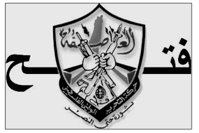
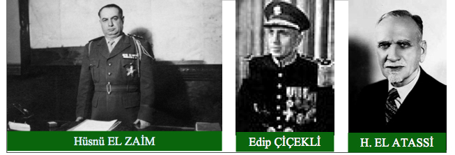
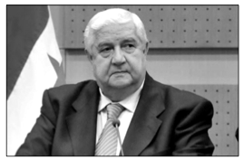
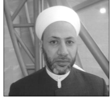

I. BÖLÜM-SURİYE’NİN DÜNÜ
A. 1920’LERE KADAR SURİYE
Suriye, dinî ve kültürel akrabalıklarımız başta olmak üzere, derin ve güçlü tarihî bağlarla bağlı bulunduğumuz Ortadoğu’nun en önemli ülkelerinden biridir.
Türkiye - Suriye ilişkilerinin geleceği ve Ortadoğu coğrafyasında yaşanan sorunların bir nebze olsun çözümü amacıyla bu çalışmanın yararlı olacağına inanmaktayız.
Suriye’nin de içinde bulunduğu coğrafyanın genel karşılığı olan “Ortadoğu” kavramını ilk defa 1902 yılında Amerikan deniz tarihçisi ve stratejisti Alfred Thayer MAHAN, Basra Körfezi’nin önemini anlattığı bir yazısında Arabistan ile Hindistan arasındaki bölgeyi ifade etmek için kullandı.1
1 Hakan ERTAŞ, 1990 Sonrası Bölgesel Gelişmeler Işığında Suriye (Master Tezi), Gazi Üniversitesi Sosyal Bilimler Enstitüsü Uluslararası İlişkiler Anabilim Dalı, Tez Danışmanı: Prof. Dr. Osman Metin ÖZTÜRK, Ankara, 2006, s.7 / Bernard LEWİS, Orta Şarkın Tarihi Hüviyeti, Ankara Üniversitesi İlahiyat Fakültesi Dergisi, XII, Ankara, 1964, s.75 / Davut DURSUN, Ortadoğu Neresi? Sübjektif Bir Kavramın Anlam Çerçevesi ve Tarihi, Sakarya Üni., İktisadî ve İdarî Bilimler Fak. / http://www.stradigma.com/turkce/kasim2003/makale_01. html
Suriye, tarih boyunca rejim sorunlarının, savaşların, menfaat çatışmalarının, geri kalmışlığın ve genelde demokratik olmayan yönetimlerin yer aldığı; sahip olduğu petrol kaynakları ve sosyal ve siyasal çalkantıları, darbeleri ile dikkatleri üzerine çeken Ortadoğu’nun önde gelen ülkelerinden biridir.2
2 Zişan ŞİRİN AYRANCI, Türkiye - Suriye İlişkileri, Yüksek Lisans Tezi, Tez danışmanı: Prof. Dr. İhsan GÜNEŞ, Anadolu Üniversitesi Sosyal Bilimler Enstitüsü, Tarih Anabilim Dalı, Eskişehir, 2006, s.10
Suriye’nin tarihi, M.Ö. 5 bin yıla kadar gitmektedir. Ortadoğu coğrafyasının batıya açılan kapısı konumunda ve üç kıtanın buluştuğu bir noktada yer alan Suriye, M.Ö. 2500 yılından itibaren stratejik önem kazandı; M.Ö. 1278 tarihli ilk yazılı anlaşma Kadeş’ten elde edilen bilgilere göre de Hititliler ve Mısırlılar arasında mücadelenin merkezi oldu.3
3 Hakan ERTAŞ, a.g.e., s.1 / Erdem ERCİYES, Ortadoğu Denkleminde Türkiye-Suriye İlişkileri, IQ Kültür-Sanat, İstanbul, 2004, s.4 / Ramazan ÖZEY, Dünya Denkleminde OrtaDoğu (Ülkeler-İnsanlar-Sorunlar), Öz Eğitim, İstanbul, 1997, s.157
Suriye toprakları sırasıyla Sümerler, Ammoriler, Akadlar, Hititler, Mısırlılar, Huriler, Asurlular, Kenanlılar, Aramiler, Persler, Yunanlılar, Romalılar, Nabatiler, Bizanslılar, Gassanlılar, Emeviler, Abbasiler, Tolunoğulları, Artukoğulları, Fatımiler, Haçlılar, Selçuklular, Atabeyleri, Zengiler, Eyyübiler, Memluklüler, Osmanlılar ve Fransız Mandası tarafından yönetildi.4
HZ. EBUBEKİR zamanında, Halit Bin Velid komutasındaki İslam ordusu tarafından YERMÜK SAVAŞI ile Müslüman coğrafyası hâline geldi. (M.S. 634 / Hicrî 12)
Müslümanların Suriye coğrafyasına verdiği önemi belirtmesinden ve günümüzde başta Suriye olmak üzere İslam coğrafyasındaki sosyal ve siyasal sorunların çözülmesi hakkında bizlere ölçü vermesinden dolayı Halit Bin Velid ve Yermük Savaşı’nı birazcık açmak da yarar vardır, diye düşünmekteyim.
HZ. EBUBEKİR’in talimatları doğrultusunda Yermük’te toplanan İslam Kuvvetleri, dört komutanın emrinde dört ayrı grup halinde Bizans İmparatoru Heraklius komutasındaki Bizans ordularını Yermük’te bekledi. Hıristiyan ordusu 240.000; Hz. Ebu Bekir’in emriyle Irak’tan Yermük’e hareket eden Halit Bin Velid’in kuvvetleriyle birlikte İslam ordusu ise 46.000 askerden meydana geldi.5
Hicretin 12. yılının sonlarına doğru yapılan bu YERMÜK SAVAŞI ile Suriye, İslâm topraklarına dahil oldu.
Hz. Ebubekir’in Yermük Savaşı öncesi, İslâm komutanlarına yönelik yaptığı konuşma da günümüz insanlığına dersler vermesi dolayısıyla önemli görülmelidir:
“ …/… Allah yolunda savaşınız. Allah’ı inkar edenlere savaş açınız. Allah kendi dinine yardım edecektir. Sakın ganimet malından çalmaya kalkışmayınız. Hile yapmayınız ve korkmayınız; yeryüzünde fesat çıkarmayınız. Size emredileni yerine getirip isyan etmeyiniz.
Hurma ağaçlarını kesip yakmayınız. Hayvanları öldürmeyiniz; meyveli ağaçlara dokunmayınız! Kiliseleri yıkmayınız! Çocukları, ihtiyarları ve kadınları öldürmeyiniz! …/…” 6
6 Muhammed Yusuf KANDEHLEVİ, Hayatu’s-Sahabe, Akçağ Yayınları: 1, s.202 / http://bilgimakale.com/Dinislam-Oku-1064-hz.-ebubekir%E2%80%99in-sam%E2%80%99a-ordu-gonderirken-komutanlarina-insanla.html
SURİYE; sonraki zamanlarda Emeviler, Abbasiler, Tolunoğulları, Selçuklular ve Eyyübîlerin egemenliği altına girdi. Suriye’nin Türklerle ilk karşılaşması, 9. yüzyılda Mutasım döneminde Şam ve Mısır’a vali olarak tayin edilen Eşnas El TÜRKÎ ile oldu. Suriye’deki Türk hakimiyeti ise esas itibariyle Tolunoğulları ile başladı.7
7 Hülya Aslan EROL, Suriye Colan (Golan) Türkmenleri Ağzı, Modern Türklük Araştırmaları Dergisi, Cilt: 6, Sayı: 4, Aralık 2009, s.41
1096-1099 yılları arasında yapılan 1. Haçlı saldırıları neticesinde Fransız ve İngilizler Trablusşam, Sur, Yafa, Nablus gibi şehirlerde feodalite rejimine dayanan DÜKALIK ve KONTLUKlar kurdular.8
Fransız, İngiliz ve diğer Avrupalı askerlerden meydana gelen HAÇLI ORDULARI, 1096-1270 yılları arasında yaptıkları seferlerle, Suriye coğrafyasında akla hayale gelmeyecek zulüm ve katliamlar yaptılar. 9 Batılı siyasetçilerin beyninde ve idealinde özenle muhafaza edilen Haçlı zihniyeti, çağlar boyunca Müslüman toplumlar üzerinde uygulama alanı buldu.10
9 http://www.cografya.gen.tr/siyasi/devletler/suriye.htm
10 Tim WEINER, “Bir CIA Tarihi: Küllerin Mirası” (The Legecy Of Ashes: A History Of CIA), Koridor Yayıncılık, İstanbul, 2007, s.169-170
İngilizlerin Irak’ta, Fransızların Suriye’de toprak talebinde bulunmalarının, hak iddia etmelerinin temelinde; Haçlı Seferleri sonucu bu coğrafyada kesintili ve kısa süreli de olsa egemen olmaları yatmaktadır.
Suriye, 1250 - 1303 yılları arasında zaman zaman Moğol saldırılarına da maruz kaldı.
Bir dönem Suriye topraklarının yönetimi Memlüklerin eline geçti. Memlüklerin hakimiyeti, 1517’de de Yavuz Sultan Selim’in Kahire’yi almasıyla son buldu. Suriye coğrafyası, artık bir Osmanlı toprağı idi.

Osmanlılara baş kaldırarak Mısır’da ayrı bir yönetim kurmuş olan Kavalalı Mehmed Ali Paşa, 1831’de Suriye’ye hakim oldu.
1840’ta gerçekleştirilen halk ayaklanmasından sonra, yeniden Osmanlı devletine bağlandı.
Özellikle 18. yüzyıldan sonra Osmanlı Devleti’nin belli alanlarda kendini yenilememesi, bilim ve teknolojiye gerektiği önemi vermemesi, Avrupa’da cereyan eden milliyetçilik akımlarının Osmanlı ülkesinde yansımalarını bulması vb. sebeplerle Ortadoğu coğrafyasındaki sosyal ve siyasal sorunlar çözümlemez konuma geldi. Bu sorunların orta çıkışında bazı doğal nedenler gösterilebileceği gibi coğrafya üzerinde siyasal, iktisadî ve mitolojik emelleri olan millet ve devletler tarafından körüklenen, desteklenen provokasyon hareketleri de gösterilebilir. Konuya, aynı pencereden bakan Sayın DAVUTOĞLU, “Derin Strateji” adlı kitabında şu cümlelere yer vermektedir:
“18. yüzyıldan itibaren Osmanlı sisteminin yavaş yavaş çözülmeye başlaması ile birlikte Osmanlı ile sömürgeciliğin palazlandırdığı Batı Avrupa arasındaki denge Osmanlı aleyhine bozulma dönemine girmiştir. Bu dönüm noktası Ortadoğu’daki son dönem dış müdahale tarihin başlangıcı olarak kabul edilebilir.”11
11 Ahmet DAVUTOĞLU, Stratejik Derinlik, Küre Yayınları, Altmışıncı Basım, Kurtiş Matbaacılık, İstanbul, 2011, s.133
Özellikle, 19. yüzyıldan sonra Batılı ülkelerin emperyalist düşüncelerle Ortadoğu coğrafyasına yaklaşması ile birlikte bu bölgede sosyal, siyasal ve iktisadî sorunlar tedricen artış gösterdi. Ortadoğu coğrafyasında görülen mücadele; bölgede yaşayan Arapların bağımsızlık ve egemenlik mücadelesinden ziyade, bölgede bulunan petrol ve doğal gaz başta olmak üzere yer altı kaynaklarının emperyalist devletler tarafından paylaşım mücadelesidir. Doğuda Japonya, batıda ABD ve Avrupa devletleri, geleceklerini esas itibariyle Ortadoğu petrollerine bağladı.12
12 Önder ÖNGÖR, Soğuk Savaş Sonrası Dönemde ABD’nin Ortadoğu Coğrafyasında Uyguladığı Güvenlik Politikaları ve Bu Politikaların Türkiye Üzerine Yansımaları, Gebze Yüksek Teknoloji Enstitüsü Sosyal Bilimler Enstitüsü, Strateji Bilimi Anabilim Dalı, Yüksek Lisans Tezi, Tez Danışmanı: Yrd. Doç. Dr. Abdülkayyum KESİCİ, Gebze, 2005, s.42
1900-1920 yılları arasındaki dönem, Suriye coğrafyası için çok önemlidir. Bu dönemdeki meydana gelen olaylar, sonraki dönemlerde kurulan Türkiye-Suriye ilişkilerinin temellerini oluşturdu; Batı’nın bölgeye müdahale etmesine zemin hazırladı.
B. 1920 – 1970 ARASI SURİYE (Darbeler Dönemi)
1920 yılında Fransız mandası haline gelen Suriye, Fransızlar tarafından beş bölgeye ayrıldı:
Lübnan Bölgesi, Şam Bölgesi, Halep Bölgesi, Lazkiye ve çevresindeki Alevî Bölgesi, Ürdün sınırındaki Dürzî Dağları’nı içine alan Dürzî Bölgesi.13 Suriye halkı, 1920 ve sonrasında Fransız işgâline direnmesine rağmen, on binlerce Suriyeli, Fransızlar tarafından öldürüldü, büyük şehirler bombalandı.
13 Hülya Aslan EROL, a.g.e., s.41
Osmanlı Ordusunun Suriye’den çekilmesine müteakip, Fransız ve İngilizler, bölgede kıyasıya bir rekabete girdi. BAĞDAT PAKTI14 döneminde Suriye’nin eski Sovyetler Birliği tarafına geçmesi ve Türkiye’nin de ABD tarafına geçmesi Türkiye-Suriye arasındaki ilişkilerin daha çok gerilemesine neden oldu. Bilinmelidir ki, iki ülke arasındaki sorunlar, uluslararası kutuplaşmalarla değil; aynı blok içinde yer almalarıyla çözülebilir. Her iki ülke halkının ortak tarih, ortak kültür, ortak coğrafya ve ortak menfaat özellikleri dikkate alınmadan yapılan hiçbir girişim, yarar getirmez.
14 Arda BAŞ, Ortadoğu Krizleri ve Türkiye (1950–1958) (Yüksek Lisans Tezi), Abant İzzet Baysal Üniversitesi Sosyal Bilimler Enstitüsü Tarih Anabilim Dalı Türkiye Cumhuriyeti Tarihi Bilim Dalı, Tez Danışman: Doç. Dr. Behçet Kemal YEŞİLBURSA, Bolu, 2006, s.52/79
20. yüzyılın başlarında Osmanlı’daki Jön Türkler hareketini model alan Arap milliyetçisi Arap Gençleri 1911’de Paris’te “EL FETİH” hareketini gizlice başlattı. Siyonizm ve İngiliz aleyhtarı olarak başlayan bu harekete Fransızlar büyük destek verdi. Fransızlar, Birinci Dünya Savaşı’nın sonrasında Şam’da El Fetih merkezinin kurulmasına izin verdi.15
15 Paul JOHNSON, Yahudi Tarihi, Çeviren: Orhan FİLİZ, Pozitif Yayınları, İstanbul, 2000, s.400

(Yaser Arafat’ın önderliğinde 1959’da Filistin’de kurulan direniş örgütü El Fetih, 20. yüzyılın başlarında Arap gençleri tarafından faaliyete geçirilen El Fetih’in devamı niteliğinde yorumlanabilir.)
1920’li yıllarda bağımsız Suriye emellerini taşıyan Arap milliyetçileri, siyasî faaliyetlerini artırdılar. Ancak, bu yıllarda Arap milliyetçileri önlerindeki engelleri yıkamadılar. Rus nüfuzu istemeyen ve bölgedeki petrolde gözü olan İngilizler, Filistin bölgesinde emelleri olan Yahudiler ve bölgede güç olarak kalma istekleri bulunan Fransızlar karşısında Arap milliyetçileri, emellerinin gerçekleşmesi için bir müddet daha bekleyeceklerdir.16
16 Hakan ERTAŞ, a.g.e., s.48 / M. Âkif OKUR, Fransız Manda Yönetimi Döneminde Suriye, Ortadoğu Siyasetinde Suriye, Derleyen: Türel YILMAZ ve Mehmet ŞAHİN, Platin, Ankara, 2004), s.3
* * *
Halkın direnişi neticesinde Fransa, 1943’te Suriye’den çekilme kararı aldı; 12 Nisan 1946 tarihinde ise Suriye, bağımsızlığını ilân etti.17 Fransa, 17 Nisan 1946 tarihinde de Suriye’nin bağımsızlığını resmen tanımak zorunda kaldı.
17 Zişan ŞİRİN AYRANCI, a.g.e., s.24
Fransa, kendi yararına sistemi ayakta tutacak bir bürokrat ve siyasetçi tabakasını Suriye’de bırakmıştı. Bu siyasetçi ve bürokratlar, bağımsızlık sonrasında ülke yönetimini ele aldı. Suriye’de uzun bir zaman siyasî istikrar sağlanamadı.18/19
18 Fahir ARMAOĞLU, 20. Yüzyıl Siyasî Tarihi 1914-1990 (Cilt I: 1914-1980), Türkiye İş Bankası Kültür Yayınları, Genel Yayın No.: 252, Tisamat Basım Sanayi, Sekizinci Baskı, Ankara, 1992, s.506
19 Hakan ERTAŞ, a.g.e., s.3
Sadece Fransa değil, Amerika başta olmak üzere bazı Batılı ülkeler; diğer Ortadoğu ülkelerinde olduğu gibi Suriye’de de, kendi hedef ve menfaatlerini gözetebilecek, kollayabilecek yöneticilerin bulunmasına büyük özen gösterdiler. İngiltere ve Fransa, bölge üzerinde ilgileri bulunan diğer Batılı devletleri de arkalarına alarak, emperyalist emellerine hizmet edebilecek, ekonomik güç ve etkinliklerinin devamlılığını sağlayabilecek konumda, Ortadoğu ülkelerinin sınırlarını yapay bir biçimde oluşturdular./20
20 Özkan YAZGAN, TÜRKİYE –SURİYE İLİŞKİLERİNDE 50 YIL (1939-1989), Yüksek Lisans Tezi, Ankara Üniversitesi Türk İnkılâp Tarihi Enstitüsü Atatürk İlkeleri Ve İnkılâp Tarihi Anabilim Dalı, Tez Danışmanı: Prof. Dr. Temuçin Faik ERTAN, Ankara, 2007, s.5
Birinci Dünya Savaşı sonrası, dil, din, kültür ve ideal farklılıkları bulunan yabancıların öncülüğünde ve desteğinde kurulan Arap devletlerinin çoğu, yarım yüzyıl kadar kurucularının mandasında yönetildi. Batılı devletlerin sömürgeci zihniyetleri ve menfaatleri doğrultusunda sınırları yapay olarak çizilen Arap toplumlarının kısa bir zamanda modern devletlere sahip olması şüphesiz ki, beklenemezdi.21
21 Yasin ATLIOĞLU, Beşşar Esad’ın Siyasi ve Ekonomik Dışa Açılım Politikaları, Marmara Üniversitesi Ortadoğu Araştırmaları Enstitüsü Ortadoğu Siyasi Tarihi ve Uluslararası İlişkiler Anabilim Dalı, Yüksek Lisans Tezi, Tez Danışmanı: Yard. Doç. Dr. Esra HATİPOĞLU, İstanbul, 2006, s.13
Suriye – Irak, Suriye – Ürdün, Irak – Suudi Arabistan sınırları gibi Ortadoğu ve Kuzey Afrika ülkelerinin pek çoğunun sınırları doğal nitelikler ve engeller ile etnik farklılıklara dayanmaz. Ülkelerin sınırları daha çok düz ve kırık çizgilerle oluşturulmuştur. Coğrafya üzerinde emelleri olan Batılı Devletlerin iradesiyle sınırları çizilen bu ülkelerin pek çoğunda sınır anlaşmazlıkları bulunmasının, etnik sorunların yaşanmasının temel sebeplerinden biri de budur.22 Lozan’da çizilen Türkiye-Suriye sınırlarının da yapay olduğu konunun uzmanlarınca bilinmektedir. Örneğin, Kilis Türkiye’de, Kilis bağları ise Suriye’de bulunmaktadır.
22 Önder ÖNGÖR, a.g.e., s.41/42
* * *
Suriye’nin ilk cumhurbaşkanı, Türk asıllı Şükrü EL-KUVVETLİ’dir.
EL-KUVVETLİ, 1949 darbesiyle görevden alındı. Sonraki zamanlarda; 1954, 1961, 1962, 1963, 1966 ve 1970 yıllarında birbirinden farklı darbeler gerçekleştirildi.
Amerikan gizli servisi CIA tarafından desteklenen 1949 darbesinden sonra Hüsnü El ZAİM devlet başkanlığını aldı. Daha sonra sırasıyla Sâmi HİNNAVİ, Edib ÇİÇEKLİ, Hâşim EL-ATASSİ ve Şükrü EL-KUVVETLİ cumhurbaşkanlığı görevlerinde bulundular.23

Kuleli Askerî Lisesi’nde eğitim gören Hüsnü El ZAİM, 1. Dünya Savaşı’nda Medine Muhafızı Fahrettin Paşa’nın yaverliğini yaptı. Osmanlı Devleti’nin parçalanmasından sonra Hatay’daki Fransız işgâl birliklerinde “Binbaşı” rütbesinde yapmış olduğu görevlerinden dolayı Fransız Harp Akademisi’ne gönderildi. ATATÜRK’ün başarılı dış politikası neticesinde 1939’da Hatay’ın Türkiye’ye katılmasıyla Hüsnü El ZAİM, Hatay’ı terk etti. İyi derecede Türkçe bilen ZAİM, Türk dostu olmasıyla tanındıATATÜRK, Hüsnü El ZAİM’in örnek aldığı bir liderdir.
Hüsnü El ZAİM, 29-30 Mart 1949’da ilk askerî darbeyi kansız bir şekilde gerçekleştirdi. Bu darbe, ekonomideki sıkıntıların baskısı altında bulunan Suriye halkı tarafından bir umut kaynağı görüldü.24 Darbeden kısa bir süre sonra, bu darbenin Şam’daki ABD Büyükelçilik binasından organize edildiği iddiaları, Suriye’de ve dünyada büyük yankılar meydana getirdi.25
24 Samih Azmi ESER, Cumhuriyet Gazetesi, 1 Nisan 1949, İstanbul, s.3
25 Ö. Faruk ABDULLAH, Suriye Dosyası, Akabe yayınları, İstanbul, 1998 s.43
Hüsnü El ZAİM, 5 Nisan 1949 tarihinde Cumhurbaşkanlığı makamında Türk gazetecileri kabul etti. Bu kabulde; Suriye’deki geçmiş yıllarda uygulanan politikanın yanlış olduğunu, Türkiye ile yakın dostluk ilişkileri kurmak istediğini belirtti.El ZAİM’in iktidarı zamanında Türkiye-Suriye arasındaki ilişkiler iyi dereceye ulaştı. İki devlet arasında turist sayısı karşılıklı olarak arttı. Suriye subayları, Türk Silâhlı Kuvvetleri uzmanları tarafından eğitildi.
El ZAİM, sadece Türkiye ile değil; aynı zamanda ABD, İngiltere, Fransa, Mısır, Suudi Arabistan, Irak ile de yakın ilişkiler içinde bulundu. Kürt kökenli ZAİM’in devlet başkanlığı döneminde, özellikle Kürtler ve Çerkezler ülke yönetiminde söz sahibi oldular.
2003 Eylül-2004 Mart Dönemi’nde, Türk Silâhlı Kuvvetleri adına görevli bulunduğum Ürdün’de benzer bir tabloyu gözlemlediğimi ifade etmek isterim. Bağımsızlığın kazanıldığı 1946 yılından itibaren Ürdün siyasetinde ve istihbaratında sırasıyla Çeçen, Çerkez ve Türklerin etkin olduğu bir gerçektir.
Türkiye – Ürdün / Türkiye – Suriye ilişkilerinde ülkelerin karşılıklı menfaatleri doğrultusunda, akrabalık ilişkileri dahil, var olan bütün toplumsal dinamikler akıllıca ele alınabilir, değerlendirmeye tâbi tutulabilir.
Suriye’nin yakın geçmişine, Hüsnü El ZAİM’in darbe yaptığı 1949 yılına dönecek olursak;
Darbeden 138 gün sonra, 14 Ağustos’ta Albay Sami HİNNAVİ ile Yarbay Behiç KALLAŞ’ın başında bulunduğu kuvvetler, Hüsnü El ZAİM’i askerî mahkemede yargıladı ve bir buçuk saat içinde kurşuna dizdi. Bu durum, öncesinde ve sonrasında meydana gelen benzer darbelerde görüldüğü gibi Suriye halkında iç savaş kaygıları oluşturdu. Hudutlar kapatıldı; Amman ve Beyrut’la telefon ve telgraf iletişimleri kesildi. O günün Ürdün kralı Abdullah (Bugünkü Ürdün Kralı Abdullah’ın dedesi), Albay Sami HİNNAVİ önderliğinde gerçekleşen bu darbeyi olumlu karşıladı. Irak yöneticileri de bu yönde beyanatta bulundu. Lâkin, Suudi Arabistan ve Mısır yöneticileri Hüsnü El ZAİM’in kurşuna dizilmesini olumlu karşılamadı; Kral Faruk, Mısır’da üç günlük resmî yas ilân etti. 26
26 Cumhuriyet Gazetesi, 15 Ağustos 1949, s.3
20 Eylül 1952 tarihinde Mısır’da yayımlanan “El Musavver” adlı gazetede Hüsnü El ZAİM’in İngiliz eşi, kocasının kurşuna dizilmesiyle ilgili şu açıklamayı yaptı:
“Mısır Kralı Faruk, Ürdün Kralı Abdullah’ın iktidarına son vermek amacıyla kocam Hüsnü El ZAİM’e yüz bin Mısır lirası teklif etmiştir. Bu para kullanılarak ihtilal tertip edilmesi maksadıyla, kocam Mısır’a hareket etmiştir. Mısır’da gerekli temaslarda bulunan Hüsnü El ZAİM, Abdullah’a karşı bir ittifak vücuda getirdikten sonra ülkesine dönmüştür. Zaim’in dönüşünden itibaren Suriye radyo ve gazeteleri Kral Abdullah’a yönelik şiddetli bir karalama kampanyasına girişmiştir. Askerî düzeyde de gerginlik baş göstermiş olup Suriye kıtaları Ürdün sınırına yığınak yapmaya başlamıştır. İşte, tam bu sırada, İngiliz Gizli Servisi, Suriye’de bir darbe tertibine girişerek Sami HİNNAVİ’yi iktidara taşımıştır. Akabinde yaşanan gelişmeyle kocam Hüsnü El ZAİM darbeciler tarafından idam edilmiştir.” 27
27 Milliyet Gazetesi, 21 Eylül 1952, İstanbul, s.3
Sovyetler Birliği’nin resmî yayın organı PRAVDA da Sami HİNNAVİ önderliğinde Suriye’de gerçekleşen darbenin İngilizler tarafından yapıldığını duyurdu.28
28 Ömer Rıza DOĞRUL, Şam’da Dünkü Durum, Cumhuriyet Gazetesi, 18 Ağustos 1949, İstanbul, s.3

HİNNAVİ tarafından yapılan ikinci darbenin gerekçeleri olarak; ZAİM’in ekonomiyi iyi idare edememesi, halkın özgürlüğünün kısıtlanması, kanunsuz işlere bulaşılması gibi içi tam doldurulmamış soyut iddialar gösterildi. Aslında darbenin temel nedeni; Suriye coğrafyasında İngilizlerin güç alanının azalmasıdır. Çünkü, Hüsnü El ZAİM, darbeyi gerçekleştirdikten sonra Amerika’ya yanaştı; onlara petrol arama izni verdi; Irak petrolünün Suriye’den geçmesini onayladı; ayrıca, ABD’ye silâh ve mühimmat siparişi verdi; bu silâh ve mühimmat darbeden 3 gün sonra, 17 Ağustos’ta Halep’e geldi. Bunlara ilâve olarak Hüsnü El ZAİM, Amerika ile bu denli sıcak ilişkiler içinde iken, diğer taraftan da İngilizlere hoş görünmek amacıyla petrolden yararlanmaları için İngiliz petrol şirketinden bir milyon Suriye lirası aldı. Siyasî ve ticarî diplomaside affedilmeyecek bu iki yüzlülük Hüsnü El ZAİM’in sonunu hazırladı. �
Bazı kaynaklara göre Hüsnü El ZAİM, sadece Amerika ile değil, Fransa ve İsrail ile de sıcak temaslarda bulundu ve o ülkelerden para yardımı aldı.
“Hüsnü El ZAİM, 1949 yılının Mart ayında İsrail’e barış önerisinde bulundu. Zaim, Amerika, Fransa ve hatta İsrail istihbaratından para alıyordu. CIA ajanları düzenlediği devrimde ZAİM’e yardımcı oldu. İsrail’den başka, Irak ve Mısırlı liderlerle de rüşvet üzerine kurulmuş ilişkileri vardı.”29
29 Dan RAVİV - Yossi MELMAN, “Every Spy a Prince”, s.81 / http://www. masonluk.net/kabala_masonluk_06_2.html
Dönemin Suriye Ankara Büyükelçisi İhsan El Şerif’in Suriye’ye dönüşünde, Türkiye’den ayrılmadan önce basına verdiği şu açıklamalarda, gelecekteki bir yarısı SOSYALİZM olan Baas Partisi ideolojisinin diğer yarısını ortaya koyar gibi idi. ARAP BİRLİĞİ…
“İki dost ülke arasında eskiden beri devam eden iyi ilişkiler yeni hükümet tarafından da devam ettirilecektir. Bizzat başbakan son beyanatında bu yönde temennilerde bulunmuştur. Yeni Suriye hükümeti, eski hükümete nazaran ARAP BİRLİĞİ projesini destekleyecektir ve Suriye dış politikası ARAP BİRLİĞİ politikasıdır.” 30
30 Vatan gazetesi, 22 Ağustos 1949, İstanbul, s.3
EL ZAİM karşıtı, İngiliz destekli � yeni bir darbenin önderi olan Sami HİNNAVİ, Halep doğumludur. Önce Osmanlı sonra da Fransız manda ordularında görev aldı. Ağustos 1949’da Devrim Komuta Konseyi Başkanı ve Genelkurmay Başkanı oldu. Suriye’nin Haşimîler yönetimindeki Irak’la birleşmesinden yana olduğu düşüncesiyle 19 Aralık 1949’da Albay Edip ÇİÇEKLİ’nin yönettiği bir darbe sonunda görevine son verildi. Beyrut’a kaçtı ve 1950 yılında orada öldürüldü.
* * *
Genelde Ortadoğu coğrafyasının bütünü, özelde Suriye coğrafyası, tabir yerindeyse tam bir “DARBELER COĞRAFYASI” olagelmiştir. Suriye halkının demokrasi ve insan hakları konularında belli bir toplumsal bilince sahip olmaması, birileri tarafından bu durumun istismarına ve yeni darbelerin yapılmasına neden oldu. 1949 yılının üçüncü darbesi, 20 Aralık’ta Albay Edip ÇİÇEKLİ önderliğinde yapıldı.31 Bu seferki darbenin görünürdeki gerekçesi; Sami HİNNAVİ’nin Suriye aleyhinde Irak ile iş birliği içinde bulunmasıdır. Gerçekte ise, Albay Edip ÇİÇEKLİ, CIA adına çalışan, ABD’nin menfaatlerini Suriye’de koruma gayretinde bulunan biridir. 32 O yıllarda Şam’da bulunan CIA üs şefi Miles COPELAND, Edip ÇİÇEKLİ’yi şöyle tanımlar:
“… asla imajını zedelemeyen sevimli bir haydut. … dine karşı saygısızlık, kâfirlik, cinayet, zina ve hırsızlık gibi suçları vardı.” 33
33 Tim WEINER, a.g.e., s.171
Darbenin sonunda, Sami HİNNAVİ tutuklandı, Cumhurbaşkanı ATASSİ ise sürgüne gönderildi. HİNNAVİ, bir süre sonra serbest bırakıldı, 1950’de Beyrut’ta bir suikast sonucu öldürüldü. Edip ÇİÇEKLİ, önce Genelkurmay Başkanı, 1953 yılında ise Devlet Başkanı oldu.
Edip ÇİÇEKLİ, Nasır’la birlikte Arapların liderleri konumunda prestij kazandıkça böbürlendi, Hatay konusunu gündemde tuttu ve Hatay’ın Suriye’ye ait olduğunu iddia etti. Sadece Hatay vilayetimiz değil, Torosları da kapsayacak şekilde Suriye haritaları bastırarak popüler siyaset yaptı, gerçeklere dayanmayan hamasî Arap milliyetçiliğini körükledi. Türkiye, tepki olarak Şam Büyükelçisi’ni geri çekti. 34
34 Özkan YAZGAN, a.g.e., s.31
Edip ÇİÇEKLİ, dört yıllık iktidarı döneminde toprak ağalarının elinden aldığı arazileri toprağı olmayanlara dağıttı. Baas Partisi’nin etkisini azaltacak uygulamalara (Örnek: Baas Gazetesi’ni kapattı.) yer verdi.� Öğrenci ve öğretmenlerin siyaset yapmasını yasakladı, gösteri ve grev haklarını ellerinden aldı.
1952’de Edip ÇİÇEKLİ tarafından kurulan ARAP KURTULUŞ HAREKETİ PARTİSİ dışında bütün partiler kapatıldı. Baas Partisi’nin mimarları Mişel EFLAK, Salah BİTAR ve Ekrem HURANİ başta olmak üzere 26 subay önce gözaltına alındı, sonra Lübnan’a sürgün edildi. Edip ÇİÇEKLİ aleyhine etkin muhalefeti Lübnan’da da devam ettirmeleri nedeniyle, Mişel EFLAK, Salah BİTAR ve Ekrem HURANİ Avrupa’ya gönderildi. ÇİÇEKLİ, 10 Temmuz 1953 tarihinde yapılan halk oylaması ile cumhurbaşkanı seçildi; cumhurbaşkanına geniş yetkiler veren yeni anayasa onaylandı.�
ÇİÇEKLİ’nin özgürlükleri ortadan kaldırıcı, baskıcı yönetimi ülkedeki muhalif grupların birleşmesine zemin hazırladı. 1954’de Dürzîler isyan hareketine girişti. Baas Partisi, ordu ve halk içinde gücünü artırdı. ÇİÇEKLİ döneminde, Lazkiye’deki Nusayri Dağları ile Suriye’nin güneyindeki Dürzî dağları bombalandı. Bu bölgelerde yaşayan Nusayriler ve Dürziler büyük acılar yaşadı.
Baskı ve zulümlere rağmen, ülkenin yönetimini kaybettiğine kanaat getiren Edip ÇİÇEKLİ, 1954’te cumhurbaşkanlığından istifa etti ve Beyrut’a kaçtı. 1960’ta Brezilya’ya yerleşti. 1964’te ise Suriyeli bir Dürzî tarafından burada öldürüldü.� Bu gelişmeler göstermektedir ki, mezhep odaklı siyaset yapma; toplum üzerinde de o siyaseti uygulayan insanlar üzerinde de büyük bir hatadır.
ÇİÇEKLİ’den boşalan cumhurbaşkanlığı makamına getirilen Albay ATASSİ, ilk beyanatında “Amacımız, ülkede demokratik bir rejim tesis etmektir.” ifadesine yer verdi.35 ÇİÇEKLİ taraftarları, ülke yönetiminden teker teker el çektirildi. Batı yanlısı politika izleyen ÇİÇEKLİ Dönemi’nde görev yapan üst düzey bürokrat ve milletvekillerinin almış oldukları maaş ve tazminatların iade edilmesi konusunda kanunlar çıkarıldı.36
35 Zafer Gazetesi, 26 Şubat 1954, Ankara, s.1-6
36 Mücahit TOPALAK, İhtilal İçinde İhtilal, Zafer Gazetesi, 26 Şubat 1954, Ankara, s.3
Bu aşamadan sonra Sovyetler Birliği ile Suriye yönetimi arasındaki ilişkiler güçlendi; İngiliz, Fransız ve İsrail başta olmak üzere Batı ülkelerinin politikalarına karşı olumsuz düşünceler, yönetim ve halk arasında daha çok taraftar buldu. Sovyetler Birliği ile her alanda ikili ilişkilere önem veren Suriye, bu yönüyle diğer Arap ülkelerinden soyutlandı.� Bu dönemde Ruslar, tarihî ideallerini gerçekleştirmiş ve bir Ortadoğu ülkesine ayak basmış oldu. Ayrıca, birçok Sovyet askeri ve uzmanı Suriye’de bulunma imkânı kazandı.37
37 Fahir ARMAOĞLU, a.g.e., s.507
1955’te Türkiye, Irak, Pakistan ve İngiltere arasında imzalanan BAĞDAT PAKTI, Suriye ve Mısır yöneticilerinin üzerinde endişe uyandırdı. Mısır ve Suriye gibi Arap ülkelerinde İngilizlere karşı duyulan güvensizlik neticesinde, mukabil yeni projeler üretildi.38 Nihayet, 1 Şubat 1958’de Suriye ile Mısır birleşerek BİRLEŞİK ARAP CUMHURİYETİ kuruldu.39 Mısır Cumhurbaşkanı Cemal ABDÜNNASIR, yeni devletin Cumhurbaşkanı oldu. Birleşik Arap Cumhuriyeti’nin anayasası, 5 Şubat 1958’de açıklandı. Birliğin başkenti Şam kabul edildi.40
38 Zişan ŞİRİN AYRANCI, a.g.e., s.110
Birleşik Arap Cumhuriyeti, uzun ömürlü olmadı. Suriye’nin eski devlet başkanlarından Şükrü El Kuvvetli’nin Nasır’a yönelik yaptığı şu konuşma, dönemin Suriye’si hakkında oldukça manidardır:
“Siz, bir politikacılar milleti devraldınız. Bunların % 50’si kendilerini millî lider sanır. % 25’i kendilerini peygamber ve en azından % 10’u da kendilerini Allah sanır.” 41
41 Fahir ARMAOĞLU, a.g.e., s.509/510 (Naklen: Abu JABER, The Arab Ba’ath Socialist Party, s.48)
Suriye ile Mısır yöneticileri, tek devlet oldukları ilk günden itibaren pek çok konuda sürtüşmeler yaşadılar. BİRLEŞİK ARAP CUMHURİYETİ’nin devlet başkanı Nasır, Suriye’yi Mısır’ın bir eyaleti gibi gördü. Nasır, devletçi, sosyalist ve milliyetçi bir ideolojiye sahipti. Mısır başta olmak üzere, tüm Arap ülkelerinde bu ideolojisini yaşatma ve yaymaya büyük önem verdi.� Ayrıca, Suriye Baas Partisi’nin yöneticileri, Sosyalizm konusunda NASIR’dan farklı olarak daha çok Sovyetler Birliği ekseninde uluslararası politika izlemeyi uygun gördü.42
42 Fahir ARMAOĞLU, a.g.e., s.510
Bu dönemde, Sovyetler Birliği’nin Ortadoğu’da ve Akdeniz’de etkin bir role soyunması, Türkiye-Amerika ilişkilerini olumlu yönden geliştirdi. Sovyetler Birliği tarafından kendisinin bir anlamda ablukaya alındığı kaygısına kapılan Türkiye, güvenliğinin korunması amacıyla Amerika ile girmiş olduğu iş birliğini geliştirdi. 1958 yılının son aylarında Amerika, Türkiye’de füze üsleri kurmak istediğini belirtti. Bu gelişmeler, Türkiye-Sovyetler Birliği ilişkilerinin daha da çok gerilmesine neden oldu.43
43 Fahir ARMAOĞLU, a.g.e., s.514
28 Eylül 1961’de Abdülkerim NAHLAVİ’nin önderliğinde gerçekleşen hükümet darbesiyle Suriye, Birleşik Arap Cumhuriyeti’nden ayrıldı. Baas Partisi’nin mimarlarından Ekrem HAVRANİ ve taraftarları, bu birlikten ayrılmayı olumlu bulmasına rağmen; Mişel EFLAK ve Salah BİTAR taraftarları Birleşik Arap Cumhuriyeti’nin bozulmasını Arap birliği açısından zararlı gördü. Mamun KUZBARİ’nin kurduğu hükümet, ülkenin adını SURİYE ARAP CUMHURİYETİ olarak değiştirdi ve ülkeyi Arap Ligi’ne üye yaptı. 14 Aralık 1961’de Nazım EL KUDSÎ Cumhurbaşkanı, Maruf DAVALİBİ ise Başbakan oldu. 44
44 R.Kürşat RÜSTEMOĞLU, “1949-1981 yılları Arasında Suriye ve Mısır’da Vuku Bulan Hükümet Darbeleri ve Bunların Türkiye’deki Yankıları”, Yüksek Lisans Tezi, Danışman: Prof. Dr. Hüseyin SALMAN, Marmara Üniversitesi Ortadoğu Araştırmaları Enstitüsü, İstanbul-2008, s.14
Suriye’de darbeler, sonraki yıllarda da peşi sıra devam etti. Nasır’ın sadece Mısır’da değil, tüm Arap toplumlarında lider olarak görüldüğü dönemde Suriye’de Nasır taraftarları ve Nasır karşıtları arasında kavgalar sürerken 3 Mart 1962’de bir grup subay tarafından yeni bir darbe yapıldı.� Cumhurbaşkanı Nazım EL KUDSÎ, Suriye’nin iç işlerine karıştığı için Mısır’ı Arap Ligi’ne şikâyet etti. 45
45 Doğan ŞENTÜRK, Ortadoğu’da Arap Birliği Rüyası, Saddam’ın Baas’ı, Alfa Yayınları, İstanbul, 2003, s.195-196
Baas ve Nasır taraftarlarıyla bağımsız subaylardan meydana gelen bir organizasyon, Tümgeneral Ziyad El HARİRİ önderliğinde 8 Mart 1963 tarihinde bir darbe daha yaptı. Cumhurbaşkanı Nazım EL KUDSİ, Ekrem HURANİ ve ordu komutanı General Zahr EL DİN tutuklandı. Başbakan Halit EL AZİM ise Türk Büyükelçiliğine sığındı.46
46 Sadık ATAK, Harp Sonrası Dünya (1945-1966), Ankara, 1966, s.497
Salah BİTAR, 9 Mart 1963’te hükümeti kurarak Başbakan oldu. Hükümete alınan Nasır taraftarı beş bakan, Mayıs ayında istifa ettiler. Hemen akabinde Nasır taraftarı 47 subay ve 1000 astsubayın ordu ile ilişkileri kesildi.�
17-18 Temmuz 1963 tarihinde Nasır taraftarı birkaç bin kişinin Şam’da başlattığı darbe girişimi kısa sürede bastırıldı. 19 Temmuz’da darbe girişimi nedeniyle 8 subay ve 14 sivil idam edildi. Salah BİTAR, 4 Ağustos 1963’te 4. hükümeti kurdu. (Son 6 ay içinde) Baas Partisi, dışta Pan-Arap, içte sosyalizm propagandasıyla Suriye’de güçlendi. 1963’te ülkenin tek kanunî partisi hüviyetini kazandı.47
47 Hakan ERTAŞ, a.g.e., s.51
Yakın dönem Suriye tarihinde darbeler durmadı; nihayet 23 Şubat 1966’da alevi kökenli General Salah El CEDİD ve Hafız ESAD ile sünni kökenli Nurettin El ATASSİ birlikte yeni bir darbe yaptılar. Bu darbe ile BAAS PARTİSİ iktidara geldi.
General Salah El CEDİD tarafından 1 Mart 1966 tarihinde; Nurettin El ATASSİ Devlet Başkanı; Yusuf ZUAYYİN Başbakan; İbrahim MAKHUS ise Dışişleri Bakanı olarak görevlendirildi.
Darbeyle birlikte, özellikle Hafız ESAD, Genelkurmay Başkanlığı ve Hava Kuvvetleri Komutanlığı görevlerini uhdesine alarak Suriye’nin en güçlü kişilerinden biri oldu. 1967 Suriye-İsrail Savaşı’nda Suriye’nin yenilgiye uğraması, Baas yönetimine karşı muhalif düşüncelerin güçlenmesine neden oldu.
Salah EL CEDİD ile Hafız ESAD taraftarları arasında birkaç yıl süren çatışmalar yaşandı. Sonunda 13 Kasım 1970 tarihinde Hafız ESAD, Salah El CEDİD yönetimine karşı darbe yaptı ve Suriye’de iktidarı ele geçirdi. Hafız ESAD, CEDİD’e karşı olan çıkışını “Hareketü’t Tashih” (Düzeltme Hareketi) olarak bildirdi.48/49 EL CEDİD, ATASSİ ve ZUAYYİN ile bunların taraftarları hapse atıldı. 50 / 51
48 Samagan MYRZAİBRAİMOV, Beşar Esad Döneminde Suriye’nin Rusya’ya Yönelik Politikası, Yüksek Lisans Tezi, Tez Danışmanı: Yard. Doç. Dr. Esra HATİPOĞLU, M. Ü.Ortadoğu Araştırmaları Enstitüsü Ortadoğu Siyasî Tarihi ve Uluslararası İlişkileri Anabilim Dalı, İstanbul, 2007, s.5
EL CEDİD, öldüğü tarih 1993’e kadar Şam’daki El Mazzeh Cezaevi’nde kaldı.EL ATASSİ, 20 yıl hapiste kaldıktan sonra 1992’de serbest kaldı. Kısa bir süre sonra da öldü.
C. HAFIZ ESAD DÖNEMİ
Hafız ESAD, 18 Kasım 1970’de “Ahmet Hatip” isimli bir öğretmeni devlet başkanı; kendisini de Başbakan ilân etti.52 Şubat 1971’de ise Alevî kökenli Hafız ESAD, Devlet Başkanı oldu.
52 Tercüman Gazetesi, 19 Kasım 1970, İstanbul, s.7
1. Nusayrîlik
Arap Aleviliği, diğer adıyla NUSAYRÎLİK; 11. imam Hasan Askerî’nin öğrencisi olan İmam Nusayrî’nin İslam yorumu üzerine dayanmaktadır.
NUSAYRÎLER, Kur’an-ı Kerim’deki bazı ayetlerin görünen anlamın dışında ayrıca derin, batınî anlamları olduğu inancından yola çıkan bir İslam anlayışına sahiptir.53 Diğer İslam toplumlarından farklı olarak reenkarnasyon inancı taşımaktadırlar. Bu inançtan dolayı diğer İslâm toplumları tarafından İslâm’a zıt olarak yorumlandığı için Nusayrîler kendilerini kapalı tutmuşlardır. Kendilerine özgü bayram ve törenleri vardır ve bunlara titizlikle uymaktadırlar.54
53 Yaşar KUTLUAY, Tarihte ve Günümüzde İslâm Mezhepleri, Selçuk Yayınları, Ayyıldız Matbaası, Ankara, 1968, s.133
54 Hakan ERTAŞ, a.g.e., s.58
Nusayrîler ile Sünni Müslümanlar arasında “reenkarnasyon” dışında çok önemli inanç ve ibadet farklılığı görülmediği söylense de Ethem Ruhi FIĞLALI gibi kimi din bilginleri, Nusayriler ile ehl-i sünnet taraftarları arasında inanç ve itikatta önemli farklılıkların olduğunu ifade etmektedir.55 Nusayriler, daha çok Lazkiye, Tartus, Jeble ve Nusayrî Dağları’nda yaşamaktadır.
55 Ethem Rûhi FIĞLALI, Çağımızda İtikâdî İslâm Mezhepleri, Selçuk Yayınları, Hicrî 15. Asır Külliyatı No.:1, Birinci Baskı, Fakülteler Matbaası, İstanbul, 1980, s.143/156
Nusayrîler başta olmak üzere, Suriye’de ve diğer İslam ülkelerindeki mezhepsel farklılıklar, “BÜTÜNLEŞTİREN İSLAM” çerçevesinde ele alınmalıdır. Mezhepsel farklılıklardan ziyade, İslâm’ın tevhit anlayışı doğrultusunda ortak nitelikleri artırma temel anlayışına sahip olmak, böyle bir bilincin yayılmasını ve etkin hâle gelmesini sağlamak bütün Müslümanların yararına olacaktır. Şu tarihî gerçek, ülkelerin yöneticileri ve aydınları başta olmak üzere, bütün Müslümanlar tarafından hafızalara iyi kazınmak zorundadır:
Coğrafya üzerinde petrol başta olmak üzere iktisadî ve siyasî emelleri bulunan Fransa, İngiltere, Amerika ve İsrail gibi ülkeler, Arap milliyetçiliği ve bilinçli İslâm yükselişini engellemek veya bastırmak amacıyla mezhep farklılıklarını tarih boyunca hep körüklemiştir.�/56 Bugün de, adı geçen ülkeler, aynı amaç doğrultusunda faaliyetlerine devam etmektedir.57 Bu nedenle, Müslüman’a düşen görev; mezhep ayrılıklarına girmeden bir ve beraber olmak; farklılıklardan ziyade, müştereklerimiz üzerinde birleşme ve güç oluşturma gayretlerini göstermektir.
56 Zişan ŞİRİN AYRANCI, a.g.e., s.21
57 Ahmet Emin DAĞ, Halep Türkmenleri (1918-2008), Doktora Tezi, Marmara Üniversitesi, Türkiyat Araştırmaları Enstitüsü, Türk Tarihi Anabilim Dalı, Cumhuriyet Tarihi Bilim Dalı, Tez Danışmanı: Prof. Dr. Zekeriya KURŞUN, İstanbul, 2010, s.71/82
* * *
Hafız ESAD’ın Suriye’ye Devlet Başkanı olmasından sonra Baas Yönetimi’ne ilk destek Libya, Mısır ve Sudan’dan geldi.58 Hafız ESAD, darbenin ardından 1970 yılında 173 sandalyeli Halk Meclisi’ni; 1972 yılında ise Baas Partisi’nin de dâhil olduğu “ULUSAL İLERİCİ CEPHE”yi kurdu.
58 Vatan Gazetesi, 19 Kasım 1970, İstanbul, s.1-3
31 Ocak 1973’te, YENİ ANAYASA, referandumla kabul edildi. Önceki anayasalarda yer alan “devletin dini İslam’dır.” ifadesi, yeni anayasada belirtilmedi.59 Yasama yetkisi, üyeleri seçimle belirlenen 250 üyeli bir parlamentoya verildi. Ancak, iktidardaki Baas Partisi’nin muhalif halkın çoğunluğuna rağmen, sürekli parlamentoda çoğunluğa sahip olması, seçim sisteminin hileli olduğunun bir belgesi olarak yorumlandı.
59 Ozan Nejat Aslan, a.g.e., s.46
Anayasa’nın 8. Maddesi’nde, SURİYE ARAP CUMHURİYETİ “demokratik, halkçı ve sosyalist bir devlet” olarak, BAAS PARTİSİ ise “Toplumun, devletin ve Ulusal İlerici Cephe’nin lider partisi” olarak tanımlandı. Bu tanım, 2011’de kabul edilen Anayasa’dan kaldırıldı.
Hafız ESAD’ın darbesinden sonra. Suriye’deki Arap Alevileri, yani Nusayriler, sadece bir dinî cemaat ve sosyal ayırımcılığa maruz kalmış mezhep olma konumundan kurtularak; Suriye siyaseti ve ekonomisinde etkin bir konum kazandı. Hafız ESAD, rejim muhaliflerini etkisiz duruma getirici önlemler aldı. Ülkenin stratejik noktalarına kendi ailesinden ve mezhebinden insanları yerleştirdi. Hafız ESAD için önce aile ve mezhep, sonra da Baas Partisi geldi. Nusayrî mezhebine mensup insanların stratejik makamlarda 20-25 yıl gibi uzun süreli görev yapmaları, rejimin ve Hafız ESAD’ın iktidarının devamlılığı yönünden oldukça yararlı oldu.Yönetim kadrolarında değişikliğe ve yeniliğe açık olmayan ESAD, emekli dahi olsalar her zaman güvendiği eski dostlarıyla çalıştı.60
60 Hakan ERTAŞ, a.g.e., s. 59
ESAD, kendisine ve ailesine kayıtsız-şartsız itaat edecek Nusayrî ve Arap olmayanları da Baas Partisi yöneticileri yaptı. Dinî söylemleri baskın olmayan, lâik Sünnîler de devletin üst yönetiminde görevler aldı. Ulusal Güvenli Konseyi Başkanı Hişam İHTİYAR, Cumhurbaşkanı Yardımcısı Faruk El ŞARA, Eski Savunma Bakanı Abdülkadir TILAS, Dışişleri Bakanı Velid MUALLİM, Beşar ESAD’ın Siyasî ve Basın danışmanı Buseyne ŞABAN, Baas Partisi Genel Başkan Yardımcısı Abdullah El AHMAR, ESAD Ailesine ve Baas Partisi’ne itaat etmiş, sadakat göstermiş Sünnî kökenli yöneticilerden bazılarıdır.

Ayrıca, Hafız ESAD’ın maiyetindeki insanlara sahip çıkma becerisi de Baas Rejimi’nin uzun süre ülkede etkin olmasına zemin hazırladı.61
61 R.Kürşat RÜSTEMOĞLU, a.g.e., s.19
Hafız ESAD, dış politikasının temelini “BÜYÜK SURİYE” idealine dayandı. Suriye, Filistin, Ürdün ve Lübnan topraklarını içine alan “VERİMLİ HİLÂL” adı verilen coğrafyada büyük Suriye kurma idealini gerçekleştirmek istiyordu. Bu amaçla, Arap toplumlarının önderliğine soyundu ve Arap milliyetçiliğine önem verdi
ESAD Dönemi’nde Suriye, bölgesel güç haline geldi. ABD Dışişleri Bakanı Henry KİSSENGER’in “Ortadoğu’da Mısır’sız savaş, Suriye’siz barış olmaz.” sözü, Suriye’nin 70’li yıllardan sonraki önemini ortaya koymaktadır.62 Bununla birlikte, Suriye; İran-Irak Savaşı’nda İran’a verdiği destekten ve Lübnan’a yaptığı müdahaleden dolayı bir dönem Arap devletleri tarafından soyutlandı. Savunma sanayine ayrılan bütçe payının büyüklüğü sebebiyle ülke ekonomisinde büyük sorunlar yaşandı. Askerî sanayide Sovyetler Birliği’ne bağımlı bir politika izlenmesi de Hafız ESAD Dönemi’nin çıkmazlarından biri olarak algılandı.
62 Oytun ORHAN, Suriye Arap Cumhuriyeti, Stratejik Öngörü Dergisi, Avrasya Stratejik Araştırmalar Merkezi Yayınları, Ankara, 2006, s.5
Hafız ESAD döneminin önemli olaylarından biri de 1982 yılında Hama şehrinde yapılan katliamdır.63 Rejim muhalifleri ile ordu birlikleri arasındaki çatışmalar yirmi altı gün sürdü. ESAD yönetimi ayaklanmayı bastırdı ve Müslüman Kardeşlere büyük bir darbe indirdi. Ayaklanmanın bastırılmasının ardından 7 Mart 1982 tarihinde Hafız ESAD, halka hitaben şöyle bir konuşma yaptı:
63 Dicle TEKKAYA, Büyük Ortadoğu Projesi ve Türkiye’nin Konumu (Yüksek Lisans Tezi), Atılım Üniversitesi Sosyal Bilimler Enstitüsü Avrupa Birliği Anabilim Dalı, Tez Danışmanı: Doç. Dr. BÜLENT OLCAY, Ankara, 2007, s.21
“Yoldaşlarım, kardeşlerim: İslâmiyet için, Müslüman rolü yaparken, dinin anlamını, kavramlarını çarpıtmaktan daha büyük tehlike yoktur. ‘Katil’ Kardeşlerin yaptığı da bu: İslâm adına öldürüyorlar. İslâm adına suikastler düzenliyorlar... Kardeşler, yoldaşlar, bu ülkenin bütün kasaba ve köylerindeki halk, bu vatanı ve gönderildiği şekli ile İslâm’ı, Muhammed’in –Allah onu bağışlasın, ona huzur versin- İslam’ını savunacaktır. Evlatlarım, bağışlandığı şekliyle İslam’ı biz koruyacağız. Peygamber’in izinden gidenlerin İslâm’ını, Ömer (halife Ömer) ve Ali’nin İslâm’ını; adaletin İslâm’ını; sevginin İslâm’ını; vatanseverliğin İslâm’ını; devrimin İslâm’ını; gericiliğe ve feodalizme karşı mücadelenin İslâm’ını... Kardeşlerim, vatanın düşmanları ile iş birliği yapan emperyalist, Siyonist ve gerici düşmanların uşağı Müslüman Kardeşlere bin kere ölüm! Müslüman Kardeşlere, katil Kardeşlere, ahlâksız Kardeşlere bin kere ölüm!”64
64 Özge ÖZKOÇ, Suriye Baas Partisi: Kökenleri, Dönüşümü, İzlediği İç ve Dış Politika (1943–1991), Yüksek Lisans Tezi, Ankara Üniversitesi Sosyal Bilimler Enstitüsü Uluslararası İlişkiler Anabilim Dalı, Tez Danışmanı: Doç. Dr. Melek FIRAT, Ankara, 2007, S. 168
Hama katliamı ve ABD’nin katliama bakışı hakkında Bernard LEWİS’in şu ifadeleri de kayda değer görülmelidir:
“Suriye Devlet Başkanı Hafız Esad’ın emri ve gözetimi altında yapılan harekât, o tarihte çok az konu edildi. Bu cılız tepki, aynı yıl Lübnan’da Sabra ve Şatilla Filistin mülteci kamplarındaki bir başka katliamın uyandırdığı infialle taban tabana zıttı… Hama’daki katliam ABD’nin bir süre sonra Esad’la flört etmesine engel oluşturmadı; Esad Amerikan Dışişleri Bakanı James BAKER (Eylül 1990 ve Temmuz 1992 arasında on iki kez), Warren CHRİSTOPHER (Şubat 1993 ve Şubat 1996 arasında on beş kez) ve Madeline ALBRİGHT’tan (Eylül 1997 ile Ocak 2000 arasında dört kez) ve hatta Başkan CLİNTON’dan (Suriye’ye bir ziyaret ve Ocak 1997 ve Mart 2000 arasında İsviçre’de iki toplantı) toplantı davetleri aldı. Amerikalıların Batı toprakları içinde, Batılılara karşı, böylesi suçlar işlemiş bir yöneticiyi teskin etmek için bu kadar istekli olabileceğini düşünmek neredeyse imkânsız…” 65
65 Yasin ATLIOĞLU, a.g.e., s.22
Hafız ESAD, ABD ve Batı’nın çıkarlarını gözetmeyi de ihmal etmedi. Onun ABD’deki Yahudi teşkilâtlarıyla gizli ilişkiler içinde olduğuna dair bir belge, SUDAN’da çıkan Kabas gazetesinin 1 Temmuz 1988 tarihli sayısında yayımlandı.
* * *
II. BÖLÜM-GÜNÜMÜZ SURİYESİ
A. BEŞAR ESAD DÖNEMİ
Hafız ESAD’ın 10 Haziran 2000 tarihinde ölümü üzerine, Beşar ESAD, 10 Temmuz 2000 tarihinde düzenlenen referandumda % 97.29 oranında oy alarak Cumhurbaşkanı seçildi. Hafız ESAD’ın ölümünden sonra Cumhurbaşkanı Sayın GÜL, Başbakan Sayın ERDOĞAN, Dışişleri Bakanı Sayın DAVUTOĞLU başta olmak üzere Türk devlet yetkilileri demokratik bir dizi inkılâp yapması konusunda, Beşar ESAD’a telkinde bulundular. Oğul ESAD, Türk devlet yetkililerin istek ve telkinlerine, hem kendi ülkesinin menfaatleri hem de ılımlı kişiliği gereği sıcak bakmasına rağmen, menfaatler ilişkileri ile organize olmuş Suriye derin devletinin direnci ile karşı karşıya kalmıştır. Suriye halkının çoğunluğu tarafından sevilen Beşar ESAD, iktidarın nimetlerinden yararlanan, içlerinde kendi akrabalarının da bulunduğu bu yapılanmanın etkisinden kurtulamadı; çok partili sisteme geçemedi ve gerekli olan demokratikleşme faaliyetlerini istediği gibi gerçekleştiremedi.66
66 Hüsnü MAHALLİ, Ortadoğu’da Kanlı Bahar (Acılı Bir Coğrafyanın Uyumlu İslâm’la İmtihanı), Destek Yayınevi, İnkılâp Kitapevi Baskı Tesisleri, 7. Baskı, İstanbul, Mart 2012, s.184/185
Beşar ESAD’ın iktidara geldiği ilk zamanlarda demokratikleşme, insan hakları ve ifade özgürlüğü alanlarında kısmen yumuşama dönemi yaşansa da, bu dönem çok kısa sürdü. ESAD, derin devlet yapısının engellemeleri karşısında Suriye’nin dış politikada karşılaştığı sorunları ileri sürerek demokratikleşme reformlarından vazgeçti. Birlikte çalışabileceği, kendine bağlı insanları önemli mevkilere yerleştirdi. Bu isimlerin başında kız kardeşi Büşra’nın kocası Asıf ŞEVKET gelmektedir.67
67 Hakan ERTAŞ, a.g.e., s.53
Beşar ESAD, iktidara geldikten sonra, ülke içinde ve dışındaki konferanslarda ve toplantılarda en hassas oldukları konunun “SİYASAL İSLÂM” olduğunu önemle vurguladı. Onun gözünde, gerek Sünni, gerekse Şii ve Alevî bütün siyasal İslâm anlayışları, Suriye için bir tehlikedir.68
68 Samagan MYRZAİBRAİMOV, a.g.e., s.8
Ekim 2005’te “Şam Deklarasyonu”nu imzalayan rejim muhaliflerinin bir kısmı hapse atıldı; bir kısmı da ülkeyi terk etmek zorunda kaldı. Beşar ESAD, 27 Mayıs 2007 tarihinde düzenlenen referandumda da oyların %97.62’sini alarak ikinci kez Cumhurbaşkanı seçildi.69
69 Hakan ERTAŞ, a.g.e., s.53 (“Suriye devlet televizyonu Hafız ESAD’ın ölüm haberini verdikten hemen sonra, yayınını keserek Meclis’te Anayasa’nın 83. maddesinin değişikliğine ilişkin oylamayı vermiştir. Bu oylamayla, devlet başkanının yaşının en az otuz dört olması -tam olarak Beşar ESAD’ın yaşı- şeklindeki anayasa değişikliği onaylanmıştır. Başkanlık için adaylığı meclis tarafından kabul edilen Beşar yapılan seçimler sonucunda oyların yüzde 97,29’unu alarak Devlet Başkanlığına seçilmiştir.”)

2011 yılı başında Tunus ve Mısır’da başlayan ve “ARAP BAHARI” olarak adlandırılan demokrasi ve değişim rüzgârı, Suriye’yi etkiledi. 2011 Mart ayından bu yana demokrasi ve reform talebi ile rejime karşı direniş gösteriler yapıldı. Bu gösterilerde bugüne kadar binlerce insan öldürüldü; binlerce insanın akıbeti ise belli değildir.70
70 http://www.beyazgazete.com/haber/2012/2/15/suriye-deki-katliam-protesto-edildi-1053215.html / http://www.beyazgazete.com/haber/2012/2/5/suriye-konsoloslugu-na-girmek-isteyen-gruba-polis-mudahale-etti-2-1041067.html
Rejim karşıtı olayları durdurmak isteyen ESAD, 7 Mart ve 31 Mayıs 2011 tarihlerinde iki defa siyasî mahkûmları kapsayan af çıkardı. 21 Nisan 2011 tarihinde,1963 yılından beri uygulanan olağanüstü hal yasasını kaldırdı. Kamu çalışanlarının ücretlerinde iyileştirmeler yaptı. Yeni sosyal yasaların çıkmasını sağladı. Suriye gibi kapalı bir rejimde çanak anten ve internetin serbestleşmesini ve ekonominin liberalleşmesini savundu. Ancak, bu adımlar, yönetim karşıtı gösterileri durdurmadı; gösteriler ve çatışmalar ülke geneline yayıldı.71 / 72
71 http://www.mfa.gov.tr/suriye-siyasi-gorunumu.tr.mfa
72 Yasin ATLIOĞLU, a.g.e., s.22
Yönetim karşıtları, ESAD ve ekibinden şunları istemektedir:
- Tüm siyasî mahkûm ve tutukluların serbest bırakılması,
- Yeni siyasî partilerin kurulmasına izin verilmesi,
- Serbest ve âdil seçimler yapılması,
- Demokratik bir anayasa hazırlanması,
- Anayasa’nın 8. Maddesi anlamındaki Baas Partisi’nin anayasadaki öncü rolünün kaldırılması.
- Suriye’deki yönetim karşıtı direniş hareketiyle ilgili temelde üç sebep gösterilebilir:
- Baas Partisi ve Muhaberat’ın Prof. Dr. ekonomist Ârif DELİLE, gazeteci - yazar Nizar NAYUP gibi Nusayrilerin de aralarında bulunduğu her mezhepten, her etnik gruptan insanların üzerinde uyguladığı baskı;
- Suriye yönetiminin demokratikleşme, insan hakları, sosyal ve kültürel alanlarda duyarsızlığı; halkın taleplerine yeterli düzeyde cevap verememesi.
- İsrail, Amerika, Fransa, İngiltere ve Rusya gibi devletlerin Suriye ve Ortadoğu coğrafyasında siyasî, iktisadî, mitolojik hedeflerini gerçekleştirmek istemesi.
* * *
Suriye’deki olaylar ve Beşar ESAD yönetimi hakkında, şöyle bir analiz yapabiliriz:
2011 yılının başlarından itibaren Arap Baharı’nın Suriye’deki yansımaları ile birlikte Suriye’de muhalif güçlerin sesi daha çok duyuldu. Öğrenimini Londra’da yapan, siyasetten çok bilim dünyasıyla ilgilenen, liberal ve demokratik düşünce yapısına sahip Beşer ESAD, Devlet başkanı olduktan sonra, ülke içinde ve dışında bir dizi yenilik yapmak istedi. Ilımlı, demokrat ve uzlaşmacı kişiliğiyle Beşar ESAD, 2008-2010 yılları arasında Türkiye ile her alanda 70’e yakın anlaşma yaptı. Özellikle, Türkiye başta olmak üzere komşu ülkelerde karşılıklı menfaatlere dayalı bir politika izledi.
Dış politikadaki bu olumlu ve kararlı tutumuna rağmen; iç politikada Suriye vatandaşını rahatlatacak, iktisadî yenilikler yapmadı. İç politikada, daha çok babası Hafız ESAD gibi baskıcı ve özgürlük kısıtlayıcı bir politika izledi. Baas Partisi’nin dünyevi menfaatler üzerine kurulu ideolojik yapısını kıramadı. Beşar ESAD’ın, koyu Baas taraftarı ordu komutanı kardeşi Mahir ESAD başta olmak üzere Baas Yönetimi’nin kabile menfaatleri üzerine kurulu katı ideolojik yapısına karşı mücadele ettiği, kimi kaynaklarca iddia edilse ve böyle bir mücadele olsa bile, bu mücadelede Beşar ESAD, şu ana kadar başarılı olamamıştır. Türkiye – Suriye ilişkilerinde Beşar ESAD’ın kısmen ılımlı ve kısmen uzlaşmacı kişilik özelliklerinin dikkate alınması her iki ülke halkının yararına olacaktır, diye düşünmekteyiz.73
***
2011’in başından itibaren Tunus, Libya, Cezayir, Mısır, Yemen, Katar ve Suriye’de meydana gelen olayların bazı temel ve doğal nedenleri bulunmaktadır. Adı geçen ülke yönetimlerinin uzun yıllar halktan kopuk politikalar izlemesi, bu ülkelerde sosyal ve iktisadî sorunların yaşanması ve var olan toplumsal sorunların çözümü konusunda ülke yöneticilerinin ciddî kararlar almaması, alınan kararların uygulanmaması Arap Baharı’nı hazırlayan nedenler arasında gösterilebilir.
Lâkin, Wikileaks Belgeleri’nin 2010’un sonunda yayımlanmasıyla birlikte Arap Baharı’nın ortaya çıkması ve akabinde diğer pek çok Arap ülkesinde olduğu gibi Suriye’de de yönetim karşıtlarının faaliyetlerinin artması, olağan ve doğal bir gelişim olarak görülemez.
Son yıllarda Kuzey Afrika, Ortadoğu’da yaşanan olayların perde gerisini dikkatlice analiz ettiğimizde, senaryosu Batı ülkeleri tarafından yazılmış bir filmin sahnelenmiş olduğunu görmekteyiz.
2010 yılının son aylarında; vizeler kaldırılmış, ticarete hız verilmiş, her alanda onlarca anlaşma imzalanmış, karşılıklı iyi niyet ve samimiyet mesajları verilmiş, Türkiye ile Suriye, neredeyse tek ülke haline gelmişken neler oldu ki, iki ülkenin yöneticileri gelişime zıt mesajlar vermeye başladı, yapılan bütün anlaşmalar iptal edildi?74
74 http://www.radikal.com.tr/Radikal.aspx?aType=RadikalDetayV3&ArticleID= 1036346&Date=13.01.2011 & CategoryID=80
* * *
İnsanlar tarafından İdrak edilen; lâkin, zaman zaman unutulan bir durumu hatırlamak yerinde olur diye düşünmekteyiz. İnsan, bazen bilginin kaynağına ulaşmada, yaşanan olayların perde gerisini görmede sorunlar yaşayabilmektedir. BİLGİ; küresel ve ulusal basın olarak tanımladığımız basın organlarının bizleri aktardığı bilgiden öteye gidemez ise, gazeteler ve televizyonlar dışında bilgi kaynaklarına başvurulmaz ise, gerçek bilgiye, dolayısıyla olaylar hakkında analiz yapma yeteneğini destekleyecek bilince ulaşmak zorlaşmaktadır.
Çok yönlü bilgi kaynaklarından (kaynak kişi, kitap, internet, dergi, gazete vb) elde edilen bilgi sayesinde ulaşılacak yüksek bir bilinç ve o bilincin getireceği ufuk anlayışı ile gelişen ve değişen Türkiye ve dünya ortamında her türlü olay ve faaliyet hakkında daha etkin ve daha gerçekçi çözümlemeler ve değerlendirmeler yapma imkânı kazanılmış olacaktır.
Bu düşüncelerimizin aksine; sadece, gazete ve televizyonlara dayanan bilgi, yönlendirilmiş ve güdümlenmiş bilgi olacağından, olaylar hakkındaki gözlem ve yorumlarımız da bizim gibi görülecek; lâkin, bizim olmayacaktır.
Bu genel açıklamalara paralel, özelde Suriye’ye gelince;
Küresel sermaye desteği veya ilişkisi ile ayakta duran ulusal ve uluslar arası basın organlarının yapmış olduğu haberlerin kaçta kaçı Suriye’deki olayları bütün gerçekliği ile yansıtabilmekte? AK Parti’lisi, CHP’lisi, MHP’lisi, Has Parti’lisi, Saadet’lisi, Büyük Birlik’lisi, Baas Parti’lisi, Müslüman Kardeşler üyesi, Nusayrî’lisi, köylüsü, işçisi, öğretmeni, doktoru; özetle Türkiye veya Suriye’deki insanlar, yaşanan olayları kendi değerleri ve menfaatleri açısından görebiliyor mu?
Bu sorunun cevabının her iki ülkenin güdümlenmemiş bilgiye ulaşmış bilinçli aydın ve yöneticileri tarafından verilmesi ve üçüncü taraf yönlendirme ve organizasyonlar içinde bulunulmaması gerçekçi bir tablo oluşturur diyebiliriz. Aksi takdirde, geçmişte olduğu gibi darbeler, kaoslar, zulümler ve ölümler peşi sıra gelmeye devam eder, diye düşünmeliyiz.
1. Suriye Hakkında Genel Bilgiler
Ülkenin başkenti Şam’dır. Yüzölçümü 185.180 km2’dir. Nüfusu ise 2011 verilerine göre, 23.7 milyondur.
Etnik yapıya gelince; % 88 Arap, % 9 Kürt, % 2.8 Ermeni, % 1 Türk, % 1 Rum. Kalan nüfus; Süryâniler, Keldaniler, Nasturiler, Çerkezler ve Yahudiler’dir.75
Suriye nüfusunun yüzde 9’unu oluşturan Kürtler, yaklaşık 2 milyon nüfusla en büyük etnik azınlıktır.76 2004 yılında Haseke eyaletine bağlı Kamışlı şehrindeki bir futbol müsabakasında Araplarla Kürtler arasında çıkan olaylar, dünya basınına KÜRT İSYANI olarak yansıtıldı. Suriye’nin kuzeyinin Büyük Kürdistan’ın bir parçası olduğu iddiaları, Kürt milliyetçileri tarafından daha güçlü bir biçimde dile getirildi.�
76 Hakan ERTAŞ, a.g.e., s.57
2009 verilerine göre Gayri Safi Millî Hasıla, 54.3 milyar ABD dolarıdır.77
Suriye’nin resmî dil Arapça’dır. Ayrıca, Türkçe, Kürtçe, Ermenice gibi etnik toplumlara ait diller de konuşulmaktadır.
Ülkenin resmî dini yoktur. Halkın % 90’ı Müslüman, % 10’u Hıristiyan’dır % 0.1’i Musevî’dir. Müslümanlar, kendi içinde Sünnîler, Şiîler, Nusayriler78/79, Yezidîler, Dürzîler80 ve İsmailîler81/82 gibi alt mezhep kollarına ayrılmaktadır.83
78 Ethem Rûhi FIĞLALI, a.g.e., s.143/156
79 “… Bu mezhep mensuplarının Lübnan ve Suriye’de bulunmaları ve bu bölgeye Fransızlar tarafından göz dikilmiş olmasıdır. Bölgedeki etnik grupları teker teker ele alıp şuurlandırmak ve böylece birliği parçalama gayreti ile gerek Dürzîler ve gerekse Nusayrîler üzerinde sistematik olarak durulmuş ve işlenmiştir.” Yaşar KUTLUAY, Tarihte ve Günümüzde İslâm Mezhepleri, Selçuk Yayınları, Ayyıldız Matbaası, Ankara, 1968, s.133
80 Ethem Rûhi FIĞLALI, a.g.e., s.157/164
81 Yaşar KUTLUAY, a.g.e., s.134 “Kur’an’daki her emrin bir ‘batını’ bulunduğu prensibinden hareketle Allah’ın zatı ve sıfatları, âlemin yaratılması konusunda garip, ezoterik görüşler ileri sürerler. Cemaat mensuplarının gelirlerinin her yıl belirli bir miktarını Hanlara bağışlaması mecburiyeti vardır. Hanların serveti bundan ileri gelmektedir.. Dinî konularda mutlak salahiyet Han’ın elindedir. “
Suriye; kuzeyden Türkiye, doğudan Irak, güneyden Ürdün, batıdan Lübnan ve Akdeniz’le komşudur. Önemli akarsuları Fırat, Asi ve Habur’dur. Topraklarının % 33’ü tarıma elverişlidir.
Tarım ve hayvancılık ön plândadır. Tarım ürünlerinden elde edilen gelirin gayri safi millî hasıladaki payı % 27’dir. Başka bir kaynakta ise, gayrisafi millî hasılanın tarımdaki payı % 20 olarak gösterilmektedir. 84 Ayrıca, çalışan nüfusun % 26’sı tarım alanında iş görmektedir.
Petrol, daha çok ABD şirketleri tarafından çıkarılmaktadır. Ülkenin önemli görülen yer altı kaynaklarından biri de doğal gazdır. Petrol ve doğal gazın gayri safi millî hasıladaki payı % 14’dür. Hükümet tarafından gizli tutulduğu için petrolle ilgili bilgiler net değildir. Suriye’nin petrol rezervleri 2,5 milyar varil, doğal gaz rezervleri ise 240,7 trilyon metreküptür.
Ortadoğu’daki petrol savaşları, su sorununda olduğu gibi ayrıca analiz edilmelidir, görüşüne sahibiz. Lâkin, burada Suriye petrolleri gündeme gelmişken bir konunun altını önemle çizmek istiyoruz.
Bilinmektedir ki, petrol, son yüzyıldır vazgeçilmez enerji kaynaklarının başında gelmektedir. Petrolün öneminin bilinmesi ve tedricen artmasına paralel, aynı yüzyılın başından itibaren Ortadoğu coğrafyasının haritasının da dönem dönem yapay sınırlarla değiştiğini gözlemlemekteyiz.
Nitekim, bugünkü Suriye coğrafyası da bu türden sınırları yapay olarak değiştirilen ülkelerden biridir. Tarih bilgisi ve bilincine sahip olanların daha etkin anlayacağı gibi, Suriye; Birinci Dünya Savaşı yıllarlında İngiliz sömürgesi olarak ayrıldı. Petrol yönüyle daha zengin görülen Irak ise Fransız müstemleke toprakları idi. Lloyd GEORGE’un İngiltere Başbakanı olduğu dönemde, İngilizler usta bir siyasî manevra ile Fransızlara ayrılmış olan Irak topraklarına nüfuz etmeyi becerebildi. Musul petrollerinden kendisine hisse verilmesi şartıyla Fransa, Suriye topraklarına razı oldu.85 Böylece, İngilizler, zengin petrol yataklarına kavuştu.86
85 Ozan Nejat Aslan, a.g.e., s.29
“Fransa ve İngiltere I.Dünya Savaşı sırasında Ortadoğu’yu Osmanlı egemenliğinden çıkarmak için bölgedeki Arap topluluklarını imparatorluğa karşı kışkırtmış ve onların ileri gelenleriyle işbirliği yapmıştır. Söz konusu savaşta Arapları kendi yanlarına çekebilmek için onlara büyük Suriye’yi de içine alan birleşmiş bir Arap krallığını vaat etmişlerdir. Fakat daha henüz savaşın başlarında verdikleri sözleri unutan İngiliz ve Fransızlar, tarihte “Sykes-Picot” olarak da geçen anlaşmayı imzalayarak, Suriye’yi gizlice kendi aralarında paylaşmışlardır. Buna göre, İngilizler, Ürdün, Irak ve Filistin’i; Fransızlar ise, Suriye ve Lübnan’ı kendi egemenliklerine geçirmeyi planlamışlardır. Nitekim, bu paylaşıma uygun olarak Suriye, 1920 yılında başlayan ve 1946 yılında sona eren Fransız manda yönetimi altına girmiştir.”
86 Daniel YERGIN, Petrol (Para ve Güç Çatışmasının Epik Öyküsü), ÇEVİREN: Kamuran TUNCAY, Türkiye İş Bankası Kültür Yayınları, Genel Yayın No.: 332, Birinci Baskı, MİNPA Matbaacılık Ticaret ve Limited Şirketi, Ankara, 1995, s.209
Batı dünyasının petrole bakış tarzı hep aynı olagelmiştir. O da PARA ve GÜÇ.
Bu düşüncemizin doğruluğunu destekleyen pek çok söz, pek çok olay son yüzyılda peşi sıra cereyan etmiştir ve hâlâ da devam etmektedir. İşte, o sözlerden biri. ABD’li Bakan Harold BROWN’un 20 Şubat 1980 tarihinde söylemektedir:
“Eğer, Batılı sanayileşmiş ülkeler ve müttefiklerimiz, Körfez’deki enerji kaynaklarından mahrum bırakılırsa, bu hem onların hem de dünya ekonomisinin felâketine sebep olur. Ortadoğu’daki petrolün güvenliğinin sağlanması, ABD’nin yaşamsal çıkarlarıyla ilgilidir. Bu yaşamsal çıkarların korunması için askerî güç de dahil olmak üzere gerekli her türlü yola başvurulacaktır.”87
87 Ayfer SELAMOĞLU, ABD’nin Büyük Ortadoğu Politikası ve Küresel Yansımaları (Yüksek Lisans Tezi), Atılım Üniversitesi, Sosyal Bilimler Enstitüsü Uluslararası İlişkiler Anabilim Dalı, Tez danışmanı: Doç. Dr. İdris BAL, Ankara, 2007, s.35/36 (Naklen Tayyar ARI, Irak, İran ve ABD, Alfa Yayınları, Ankara, 2004,.s. 234/238.)
* * *
Suriye ekonomisinde ayrıca; fosfat, demir, asfaltit gibi madenler de önemlidir.88
2009 yılı rakamlarına göre; Suriye’nin büyüme oranı % 4.6, işsizlik oranı % 8.1 (gerçek oranın % 15-20 arasında olduğu söylenmektedir), enflasyon oranı % 2.6’dır.
İhracat 13 milyar ABD doları, ithalat ise 17 milyar ABD dolarıdır.
Suriye sanayisinin % 30’unu tekstil, konfeksiyon ve deri işlemeciliği meydana getirir. Şeker, gıda, meşrubat ve sigara üretimi ise sanayinin % 24’ünü oluşturur.
Ayrıca Suriye’de ağaç işleri, mobilya, kâğıt, kimyasal maddeler, boya, dayanıklı tüketim maddeleri, çimento, madenî ve toprak eşya, büro malzemeleri ve elektrik malzemeleri imalatı da bulunmaktadır. Çalışan nüfusun yaklaşık % 14’ü sanayi sektöründe iş görmektedir.�
2006 verilerine göre, Suriye’nin dış borcu 22,5 milyar dolardır. Ülkede işsizlik, düşük yatırım ve mâlî dengesizlikten dolayı ciddî bir iktisadî kriz bulunmaktadır. Her yıl 300 bin insan, iş talebinde bulunmaktadır. Artan yeni iş taleplerine karşılık verebilmek için ekonominin yıllık % 6’lık bir büyüme oranına sahip olması gerekmektedir. Ancak, % 2’lik büyüme oranı ile bu sorun çözülememektedir. Ayrıca, ülkede yabancı yatırım çok azdır.89
89 Hakan ERTAŞ, a.g.e., s.54
Suriye’nin en önemli ihraç maddesi % 65’le petroldür. Petrolden sonra ihraç edilen maddelerin başında tekstil ve işlenmiş tarım ürünleri gelmektedir. Suriye’nin ihracatında ön sıralarda Almanya, İtalya ve Fransa gibi AB ülkeleri ile Türkiye ve Suudi Arabistan bulunmaktadır. Suriye’nin en çok ithalat yaptığı ülkeler ise Fransa, Almanya, İtalya, Türkiye ve Çin’dir. Suriye’nin ithal ettiği ürünler arasında makine ve donanımları, gıda maddeleri, otomobiller, kimyasal maddeler ve tekstil ürünleri önemli bir yer tutmaktadır. 90
90 Hakan ERTAŞ, a.g.e., s.65
* * *
Gerek yönetim, gerekse yönetim karşıtı olarak önde bulunanların temel kişilik özelliklerini bilmek, Suriye’de yaşanan toplumsal olaylar hakkında daha sağlıklı çözümlemeler yapmamızı kolaylaştıracaktır.
2. Suriye Yönetim Taraftarları 91/92
91 www.setadc.org / http://www.aktifhaber.com/iste-bessar-esedin-destekcileri-565704h.htm / http://kokludegisim.net/?kd=haberoku&id=4320
Enise MAHLUF: 1934’te Lazkiye’de doğdu. 1958’de Hafız ESAD’la evlendi. Nusayrî’ kökenlidir. MAHLUF sayesinde MAHLUF sülalesi, ülkenin yönetici kadroları içinde bulundu. Özellikle kardeşi Muhammed, orduda ve siyasette oldukça önemli görevlerde bulundu. Büyük bir servetin sahibidir. Hafız ESAD’ın finans danışmanı olarak da görev yaptı.
Enise MAHLUF, medyada öne çıkmayan; ESAD Ailesi içinde yüksek nüfuza sahip bir hanımdır. Aile içi sorunların çözümünde baş aktördür. Beşar ESAD üzerinde güçlü bir yönlendirme yeteneği söz konusudur. Suriye’deki yönetim karşıtı gösterilerin bastırılması konusunda, acımasız tedbirlerin alınmasını öneren ve muhalifler tarafından nefret edilen biridir.
Mahir ESAD: 1968’de Şam’da doğdu. Hafız ESAD’ın ikinci küçük oğlu, Beşar ESAD’ın kardeşidir. (Hafız ESAD’ın çocukları: Mecit, Mahir, Beşar, Basil, Büşra) Beşar ESAD gibi, o da Sünnî kökenli bir hanımla evlidir. Cumhuriyet Muhafızları Komutanı’dır. (Hafız ESAD, azınlıkta bulunan Nusayrilerin yönetimde etkin olmasından dolayı, çoğunluk olan Sünnîlere propaganda yapabilmek amacıyla her iki oğlunun da Sünnî kökenli ailelerden aldığı hanımlarla evlendirdi.)
Mahir ESAD, öğrenimini makine mühendisliği üzerine yapmasına rağmen; silâhlı kuvvetlerde görev almayı tercih etti. Trafik kazasında ölen ağabeyi Basil ESAD gibi zalim ve dengesiz bir kişiliğe sahiptir. Hafız ESAD’ın ölümü üzerine cumhurbaşkanlığı bir ara gündeme gelse de kişilik zafiyetinden dolayı uygun görülmedi. Beşar ESAD’ın cumhurbaşkanı olmasıyla general rütbesine getirildi. 2011 yılının Mart ayında Dera kentindeki gösteriler başta olmak üzere, Suriye’deki yönetim karşıtı gösterileri bastıran ve binlerce insanın ölüm organizasyonunu gerçekleştiren Mahir ESAD’dır. Başbakan Sayın Tayyip ERDOĞAN, bir televizyon kanalında isim vererek onu, Suriye halkına karşı “insanî” davranmamakla suçladı. Uluslararası alanda tepkilere çok maruz kaldığı için ağabeyi Beşar ESAD tarafından Şubat 2012’de operasyon görevinden alındı.
Asıf ŞEVKET: 1950 Tarsus doğumludur. Hafız ASAD’ın kızı Büşra ile evlidir. Ailenin diğer fertleri gibi Nusayrî asıllıdır. Şam’da hukuk öğrenimi yaptıktan sonra 1970’de Suriye silâhlı kuvvetlerinde görev aldı. Büşra ESAD ile 1995’de evlenmesinden sonra ordudaki yükselişi hızlandı. Gücünü, doğrudan ESAD Ailesi’nden aldı. Mahir ESAD’ın muhalefetine rağmen, Beşar ESAD’ın cumhurbaşkanı olmasıyla birlikte ülke yönetimindeki etkisini artırdı. Beşar ESAD tarafından 2005’te Askerî İstihbarat’ın Başkanı yapıldı. Bir ara Beşar ESAD’a darbe plânladığı dedikoduları basında yansıdı. 2009’da istihbarattan sorumlu Genelkurmay Başkan Yardımcılığına getirildi. 2011’de muhalif gösterilerin başlamasından sonra, medyada kendini göstermedi. İstihbarat Başkanı Ali MEMLUK ile arasında geçen bir tartışmada vurularak öldürüldüğü iddia edildi. Öldürüldüğü iddiasının doğru olmadığı sonraki zamanlarda Ali MEMLUK’un basına yansıyan bazı müzakere haberleriyle açıklandı. Yönetim karşıtı Suriye halkı, onu Baas Rejimi’nin karanlık yüzü olarak görmeye devam etmektedir.
Rami MAHLUF: 1969 doğumludur. Enise MAHLUF’un kardeşi Muhammed’in oğludur. Suriye’nin en büyük iş adamlarından biridir. Rami, Suriye ekonomisini kontrolünde tutan bir güce sahiptir. RAMAK Holding’in sahibidir. (Bu holding bünyesinde; cep telefonu operatörlüğü [SyriaTel], bir banka, inşaat ve havayolu şirketi, serbest ticaret alanları, duty free mağazaları, iki özel televizyon kanalı bulunmaktadır.) MAHLUF, lüks araba ve tütün ithalatının yanı sıra Suriye’nin en büyük özel şirketi olan Şam Holding başkan yardımcılığını da yürütmektedir. Ayrıca, İngiliz petrol şirketinin (Gulfsand Petroleum’un) %6’sına sahiptir. Suriye’de iş yapmak isteyen yabancı şirketler Rami MAHLUF’tan izin almak zorundadır. Ülke içindeki her türlü yolsuzluk ve mafya olaylarının arkasında genellikle bu isim çıkmaktadır. Yönetim karşıtlarının genel kanaatine göre, MAHLUF, Suriye içinde ve dışında rejim taraftarı gösteri yapanlara bayrak, yemek ve para verdi. MAHLUF, 2011 yılının Haziran ayında, çalışma hayatından ayrılacağını; hayır işlerine önem vereceğini açıklamasına rağmen; halk düzeyinde ve uluslararası platformda, bu açıklaması samimî algılanmadı.

Ali MEMLÜK: 1945’te Şam’da doğdu. İskenderun kökenli Sünnî bir aileden gelmektedir. Suriye Muhaberat Teşkilâtı’nın genel başkanıdır. Hafız ESAD tarafından 1970’de istihbarat teşkilatında, genç olmasına rağmen görev verildi. Yıllar içinde istihbaratın hemen hemen her kademesinde bulundu. Diğer Arap ülkeleri ve ABD ile yapılan istihbarat faaliyetlerinde etkin görevler yaptı. 2001 yılının başında itibaren Suriye’de görülün muhalif hareketin bastırılmasında en önemli belirleyici insanlardan biri oldu. Geçen Aralık ayında Asıf ŞEVKET’i vurarak öldürdüğü iddiası basında yer aldı. Lâkin, 2012’nin Ocak ayında Asıf ŞEVKET’in muhaliflerle ilgili olarak yaptığı müzakereler de Arap basınında görüldü. Şu ana kadar Asıf ŞEVKET’in ölümü ile ilgili bilgiler, Suriye resmî kaynaklarca doğrulanmadı veya yalanlanmadı.
Faruk El-ŞARA: 10 Aralık 1938’te doğdu. 20 yıl boyunca Suriye d iplomasisine yön verdi. Sünnî olmasına rağmen, Hafız ESAD’a sadakati ile ön plâna çıktı ve Baas Partisi içinde hızla yükseldi. 1984-2006 yılları arasında Dışişleri Bakanı olarak görev yaptı. 2006’da Beşar ESAD tarafından Cumhurbaşkanı yardımcılığına getirildi. İngiliz Dili ve Edebiyatı mezunudur. Dışişleri Bakanı olmadan önce Roma Büyükelçiliği, Enformasyon Bakanlığı ve daha sonra Dışişleri Bakan Yardımcılığı görevlerinde bulundu.
İsrail ve ABD karşıtı sert eleştirileri ile tanındı. İran-Irak Savaşı sırasında Suriye’nin İran’ın yanında yer almasını savundu. 1990’lı yıllarda ise Suriye-Irak ilişkilerinde soğukluğun giderilmesi yönünde önemli faaliyetleri oldu. 1990’ların başında İsrail ile yapılan gizli görüşmeleri yürüttü. 2000’de ABD’de gerçekleştirilen barış görüşmelerinde Suriye delegasyonuna başkanlık etti. “İsrail’in Golan Tepeleri’nden çekilmedikçe Suriye’nin görüşmelere yeniden başlamayacağı” şeklindeki ifadesi medyada önemli yer tuttu. ABD, Suriye’nin 2003 Irak Savaşı sırasında Irak taraftarı olmasında ŞARA’yı sorumlu tuttu.
Kendisi de Derâlı olan ŞARA, 27 Nisan 2011’de çoğu Derâ’dan 200 Baas Partisi üyesinin istifasının ardından, Faruk ŞARA’nın da gelecekte Baas Rejimi’ne ters düşebileceği yorumları yapıldı. Yine ŞARA’nın Dera’da göstericilere ateş açılmasına tepki vermesi üzerine Mahir ESAD tarafından vurulduğu iddiaları Arap basınına yansıdı. Yakın gelecekte Beşar ESAD görevi bırakırsa, rejim muhalifleri tarafından devlet başkanı olabilecek, en azından ara rejimi yönetebilecek en güçlü isim olarak kabul görmektedir.
Buseyne ŞABAN: 1953’te Humus’ta doğdu. Nusayrî kökenlidir. Irak asıllı Halil CEVAD ile evli olup üç çocuk annesidir. Şam Üniversitesi İngiliz Edebiyatı mezunudur. Daha sonra master (1977) ve doktora (1982) öğrenimini Warwick Üniversitesi İngiliz Edebiyatı Bölümü’nde yaptı. 1982-84 yılları arasında Cezayir’deki Constantine Üniversitesi’nde öğretim görevlisi olarak çalıştı. 1985-2002 yılları arasında Şam Üniversitesi’nde hocalığa devam etti. Ayrıca, 1988’den 2002 yılına kadar Suriye Dışişleri Bakanlığı’nda danışmanlık; 2000-2005 arasında Arap Yazarlar Birliği Başkan Yardımcılığı ve 1993-2003 yılları arasında ise Suriye Cumhurbaşkanlığı’nda tercümanlık görevlerinde bulundu. 2002-2003 yılında Dışişleri Bakanlığı Medya Dairesi Başkanı olarak çalışan Şaban, 2003-2008 yılları arasında ise Diaspora Bakanlığına getirildi. 2008’den günümüze kadar Beşar ESAD’ın siyasî ve medya danışmanı olarak çalışmaktadır.
Buseyna ŞABAN, 2005’te Arap Birliği tarafından “Kamu Görevindeki En Seçkin Kadın” ödülüne lâyık görüldü. 2005 NOBEL BARIŞ ÖDÜLÜ için bütün dünyada aday gösterilen 1000 kadından biri oldu. Londra’dan yayın yapan Asharqal Awsat gazetesinde de köşe yazıları yazdı. Beşar ESAD’ın ablası Büşra ESAD’la olan dostluğu sayesinde Baas yöneticileri tarafından desteklendi ve rejim dostu olarak önemli bir konum kazandı. Suriye’ye uygulanan yaptırımların yanı sıra Amerika’nın kişisel yaptırım uyguladığı altı Suriyeli’den biridir.93
93 Robert FİSK, The army was told not to ire at protesters, Independent, 28 Ekim 2011
Velid MUALLİM: 1941 yılında Şam’da doğdu. Özellikle İsrail ile gerçekleştirilen barış görüşmeleri ile tanınan deneyimli bir diplomattır. Şam’ın köklü Sünnî Arap ailelerinden olan Velid MUALLİM, 1991’de Madrid Konferansı’nda Suriye adına görüşmeleri yürüten heyette yer aldı. 1994’ten barış görüşmelerinin kesildiği 2000 yılına kadar Suriye heyetine başkanlık etti. 1990-1999 yılları arasında Suriye’nin Washington Büyükelçisi oldu. 2000 yılında Dışişleri Bakan Yardımcılığı görevine getirildi. Lübnan Başbakanı Refik Hariri’nin ölümü sonrasında, 2005’te, Lübnan ile ilişkilerin yürütülmesi sürecinde sorumlu tutuldu. 11 Şubat 2006’da Dışişleri Bakanı oldu.
Dış politikadaki deneyimine rağmen, Suriye’de belirleyici bir isim olarak görülmez. Suriye’de yaşananları rejimi yıkmak isteyen unsurların protestocuların içine sızmalarına ve polise ateş açmalarına bağlayan MUALLİM, ESAD yönetiminin izlediği politikayı savunmaktadır. İç ve dış siyasette belirleyici olmaması, gücünün sınırlı kabul edilmesi nedenleriyle yönetim karşıtı göstericilerin hedefindeki politikacılardan biri değildir. Bu nedenle, 14 Nisan 2011’deki kabine değişikliğinde yerini koruyan isimlerden biridir.

Muhammed Nasıf HAYIRBEK: Hama’ya bağlı Misyaf köyünde 1937’de doğdu. Nusayrî asıllıdır. Yoksul bir aileye mensup olduğu için öğrenimini tamamlayamadı, orduya katıldı. Hafız ESAD’ın 1970’deki darbesiyle birlikte ordudaki yükselişi hızlandı. Lübnan’da görev yaptığı sırada Şii lider Musa Sadr ile temasta bulundu. Bu ilişkiden dolayı, Şii olduğu söylendi. Beşar ESAD döneminde de ordu içindeki etkisini sürdürdü; Genel Güvenlik İşleri Başkan Vekilliği görevinde bulundu. Suriye’nin İran ile ilişkilerinde kilit isimlerden biri olarak bilindi. Irak’taki son hükümetin kurulması sürecinde Suriye Başkanlık Sarayı adına Iraklı gruplarla görüştü ve Malikî hükümetinin kurulmasına “olur” verdi.
Emeklilik yaşına gelmesine rağmen, görevine devam etmektedir. Oğlu Nasıf da 70 küsür yaşına rağmen, hiç evlenmeyen, Suriye’nin önde gelen istihbaratçılarından birisidir. Cumhurbaşkanı yardımcısının yardımcısı olup, İran ve Irak dosyalarından sorumlu istihbarat yöneticisidir.
Baas Partisi ve yönetim taraftarı kişiler olarak ayrıca şu isimleri verebiliriz:94/95
94 www.setadc.org / http://www.aktifhaber.com/iste-bessar-esedin-destekcileri-565704h.htm / http://kokludegisim.net/?kd=haberoku&id=4320
Ulusal Güvenlik Konseyi Başkanı HİŞAM İHTİYAR, Eski Savunma Bakanı Ali Habib MAHMUD, Eski İstihbaratçı Behçet SÜLEYMAN, Eski Savunma Bakanı Mustafa Abdülkadir TILAS, Baas Partisi Genel Başkan Yardımcısı Abdullah El AHMAR.
3. Suriye Yönetim Karşıtları 96/97/98/99
Burhan GALYUN: Suriye Ulusal Konseyi Başkanı ve Sorbonne Üniversitesi Ç ağdaş Doğu Çalışmaları Merkezi Müdürü’dür. 1945’te Humus’ta doğdu. Gençlik yıllarında bir taraftan Arap milliyetçiliği, diğer taratan Nasırcılık ve Marksizm düşüncelerini benimsedi. 1971’de tek partili sisteme inanmadığı için Suriye’den ayrıldı ve Fransa’ya yerleşti. 1974’te Suriye’ye döndü; lâkin, baskı yönetiminin devam ettiğini görünce tekrar Suriye’den ayrıldı. 1976’da Cezayir’de akademisyenliğe başladı. GALYUN, “Demokrasi İçin Manifesto” kitabı ile tanındı. Kitabında, Arap ülkelerinin yöneticilerinin siyasî ve ekonomik açıdan başarılı olamadıklarını savundu. Arap ülkelerinde reformlara ihtiyaç duyulduğunu açıkladı.
Suriye’nin Lübnan işgaline karşı takındığı tavırla rejimin hedefi haline geldi Hakkında yakalama kararı çıkartılan GALYUN, Fransa’ya döndü. 1982 Hama Katliamı sonrasında, ESAD Rejimi karşıtı Suriye Kültürel ve Sosyal Forumu’nun uzun yıllar liderliğini yaptı.
2005’te Suriye yönetim karşıtlarını bir araya getirmek amacıyla faaliyetlerde bulundu. 16-17 Temmuz 2011 tarihinde yapılan İstanbul Konferansı’nın ardından 29 Ağustos 2011’de Suriye Ulusal Konseyi’nin geçici başkanlığına getirildi.
Silâhlı mücadele yerine siyasî mücadeleyi savunan GALYUN, Suriye yönetimi sivillere yönelik şiddeti artırınca BM’ye çağrı yaparak Suriye’ye uluslararası müdahale talebinde bulundu.
GALYUN, Arap dünyasında İran modelinin iflas ettiğini, Türk modelinin takip edilmesi gerektiğini söyledi. Siyasal hayatı boyunca Nasırcı, Marksist ya da İslamcı örgütlerin içinde yer almadı. Suriye’de demokrasi temelli sivil bir yönetim kurmayı hedefledi.
GALYUN, Suriye Ulusal Konseyi’nin hareket noktasının İslamî eğilimlerden ziyade Suriye halkının millî projesi olduğunu ifade etti. Suriyeli diğer yönetim karşıtı grup olan Demokratik Değişim için Ulusal Koordinasyon Komitesi ile Aralık ayı sonunda Kahire’de bir anlaşma imzaladı. İdeallerinde ve faaliyet yöntemlerinde Fransız etkisi dikkat çekicidir.
Abdulbasit SEYDA: Suriye Ulusal Konseyi İcra Kurulu Üyesi’dir. 1956’da Kürt köyü Haseke’de doğdu. 1994’ten beri İsveç’te sürgün hayatı yaşamaktadır. Doğu Bilimleri ve Asuroloji alanında doktora yaptı. 2003’te yayımladığı “Suriye’de Kürt Sorunu” kitabıyla tanındı. SEYDA, Ulusal Kürt Bloku’nu temsil etmektedir. Seyda, Suriye’deki Kürtlerin taleplerini Suriye Ulusal Konseyi’nin gündeminde tutan isimlerin başındadır.
Riad SEYF: Eski Parlamenter ve iş adamı SEYF, 1946 doğumludur. Ulusal Diyalog Forumu’nun kurucusudur. Liberal kişiliği ile tanındı. 1994 ve 1998 yıllarında bağımsız olarak parlamentoda yer aldı. 1993 yılında ADİDAS firmasının temsilciliğini alarak Suriye’de bir ilke imza attı. Hafız ESAD’ın ölümünden sonra, Suriye’nin yeniden şekillenmesi doğrultusunda yapılan faaliyetlere liderlik etti. 2001’de Baas Partisi’ne karşı yeni bir parti kuracağını açıkladı ve yönetim karşıtı söylemlerini sertleştirdi. “Hukuk dışı yollardan anayasayı değiştirmek” suçundan yargılandı ve 5 yıl hapis yattı. SEYF, bir süredir prostat kanseri ile mücadele etmektedir. Rahatsızlığına rağmen ülkede ayaklanmaların başlamasıyla muhalif gösterilere katılan SEYF, 6 Mayıs 2011’de “protesto yasağını deldiği” gerekçesiyle tutuklandı ve on gün sonra serbest bırakıldı.
Parlamentoda, ilk kez Suriye yönetimine karşı eleştiriler yapan bir milletvekili olarak ülkede tanındı. İstanbul’da kurulan Suriye Ulusal Konseyi’nin üyeleri arasında yer aldı. “Suriye, ESAD Ailesi’nin değil, Suriyelilerin olmalıdır.” anlayışına sahip SEYF, muhalif kanadın güçlü isimlerinden biridir.
Muhammed Faruk TAYFUR: Suriye Ulusal Konseyi İcra Kurulu Üyesi ve Suriye Müslüman Kardeşler Teşkilatı Siyasi Büro Şefi’dir. Hama doğumludur. Beyanunî ve Şukfa dönemlerinde Müslüman Kardeşler teşkilatı içerisinde görevler aldı.
TAYFUR, Müslüman Kardeşler adına yaptığı açıklamalarda, her türlü silahlı eylemden uzak kalınması gerektiğini vurguladı. 1982’deki Hama katliamının intikamını alma peşinde olmadıklarına zaman zaman ifade etti. ESAD Rejimi’nin ülkeyi mezhep savaşına sürüklediğine dikkat çekti. Demokratik, sivil ve bütün halkın eşit olduğu bir Suriye hedeflediklerini açıkladı. Suriye’deki yönetim karşıtlığının mezhepsel temelli olmadığını vurguladı.
TAYFUR, muhaliflere yapılan dış destek iddialarını reddederek hareketin tamamen ulusal olduğunun altını çizdi. Batılı güçlerin yerine Türkiye’nin müdahalesine olumlu baktığını, hava sahasının kapatılması ve tampon bölge oluşturulması konusunda Türkiye’nin rol oynamasının gerektiğini belirtti. BM Güvenlik Konseyi’nden ESAD yönetimine çıkacak yaptırım kararını veto eden Çin ve Rusya ile Suriye yönetimine askerî destek veren İran’ı Suriye halkının düşmanı olarak değerlendirdi.
Abdulahat STEYFO: Suriye Ulusal Konseyi İcra Kurulu Üyesi’dir. Haseke’de doğdu. Ana dili Suryanice, kökeni Asurî, dini ise Hıristiyan’dır. Ulusal Konsey’de Demokratik Asurî Örgütü’nü temsil etmekte olup, bu örgütün Avrupa sorumlusudur. Ulusal Konsey’in, ABD Dışişleri Bakanı Hillary CLİNTON, Rusya Dışişleri Bakanı Sergey LAVROV, Türkiye Dışişleri Bakanı Ahmet DAVUTOĞLU, Arap Birliği Genel Sekreteri Nebil EL ARABİ’yle gerçekleştirilen üst düzey görüşmelerde yer aldı. Suriye Ulusal Konseyi’nin Libya, İtalya, Almanya, Fas ve Tunus’a gerçekleştirdiği ziyaretlerde bulundu. Moskova ziyaretinde Rusya’nın Suriye halkının yanında yer alması gerektiğini söyledi.
Muhammed Riyad ŞUKFA: “Suriye Müslüman Kardeşler” Genel Sekreteri’dir. 1944’te Hama’da doğdu. İnşaat mühendisliği öğrenimi yaptı. 1980’li yılla rda Suriye yönetimine karşı verilen askerî mücadelede önemli roller üstlendi. Müslüman Kardeşler üyesi olmanın idamla yargılanmayı gerektirdiği Suriye Ceza Kanunu’nun 49. Maddesi sebebiyle 26 yıl Irak’ta sürgün hayatı yaşadı. Irak’ın 2003’te Amerikan işgali sırasında aracının içinde uğradığı suikasttan kurtuldu. Bu olaydan sonra, Yemen’e ve ardından Suudi Arabistan’a gitti.
20 Ocak 2011’de yaptığı açıklamada, Suriye yönetiminden siyasî düzenle ilgili reform beklediklerini ve bu doğrultuda parti kurma hedeflerinin olduğunu açıkladı.
İran’ın Suriye için model ülke olamayacağını, Türkiye’nin model ülke olarak alınması gerektiğini açıkladı. Suriye’deki yönetim karşıtlarının mücadelesinin hukuk mücadelesi olduğunu vurguladı.
Ali BEYANUNİ: “Suriye Müslüman Kardeşler” Eski Genel Sekreteri’dir. 1938’de Halep’te doğdu. Hukuk öğrenimi gördü. Suriye Müslüman Kardeşleri Genel Sekreteri olarak 1996’dan Ağustos 2010’a kadar görev yaptı. Müslüman Kardeşler içindeki faaliyetleri sebebiyle bir süre hapiste kaldı. 1979 yılında Suriye’den ayrılıp Ürdün’e geçti. Ancak, bir süre sonra baskılara dayanamadı bu ülkeyi de terk etmek zorunda kaldı. 2005’te siyasî mülteci olarak gittiği İngiltere’de sürgün hayatına devam etmektedir. İngiltere’de bulunmasına rağmen Suriye yönetim karşıtları için çok önemli bir kişiliğe sahiptir.
BEYANUNİ, 2006 yılında Eski Başkan Yardımcısı Abdülhalim HADDAM ile birlikte Baas Partisi’ne karşı Millî Selamet Cephesi’ni kurdu. 1996 ve 2002 yıllarından sonra 2006 yılında üçüncü kez 4 yıllığına Suriye Müslüman Kardeşleri Genel Sekreteri oldu. Görev süresinin dolduğu 2010 Ağustos ayında yerini Muhammed Riyad ŞUKFA’ya devretti. Suriye’de isyanın patlak verdiği ilk aylarda Beşar ESAD’dan reform yönünde umutlu olduğunu ifade eden BEYANUNİ, buna karşın Beşar ESAD’ı şimdiye kadar babası Hafız ESAD’dan çok da farklı bir yol izlemediği gerekçesi ile eleştirdi.

Türkiye ile Suriye halklarının aynı ortak tarihe sahip olduklarını ve iki ülkenin birçok alanda ilişkisinin bulunduğunu belirten BEYANUNİ, Suriye’de olan her şeyin Türkiye’yi çok yakından ilgilendirdiğine ve etkilediğine inanan bir siyasî liderdir. Türkiye’nin Ortadoğu ve Arap ülkeleri için “model” olabileceği düşüncesine sahiptir.
Baas Partisi ve yönetim karşıtları olarak ayrıca, şu isimleri verebiliriz: 100/101/ 102/103
Suriye Ulusal Konseyi İcra Kurulu Üyesi, El-Kuds Haber Ajansı Genel Müdürü Ahmed RAMAZAN, Suriye Ulusal Konseyi İcra Kurulu Üyesi ve Paris Üniversitesi Öğretim Üyesi BESMA KODMANİ, Suriye Ulusal Konseyi İcra Kurulu Üyesi Semir NEŞŞAR, Suriye Ulusal Konseyi Üyesi George SABRA (Hıristiyan olmasına rağmen, Müslüman Kardeşler’le yakın ilişkidedir.), Suriye Ulusal Konseyi Üyesi Rıdvan ZİYADE, Suriye Yerel Koordinasyon Komiteleri Temsilcisi Ömer İDLİBİ, Suriye İnsan Hakları Komitesi Başkanı Velid SEFUR, İnsan Hakları Aktivisti Gassan NECCAR, Şam Deklarasyonu Ulusal Konseyi Başkanı Fida HURANİ, Özgür Suriye Ordusu Komutanı Riyad Musa EL-ASAAD, Komünist Parti Eski Lideri Riyad EL-TÜRK.
4. Suriye’deki Kanaat Önderi Düzeyindeki Din Bilginleri
Suriye’nin sosyal ve siyasal hayatında etkili olan bir grup da din bilginleridir. Suriye’deki din bilgilerinden aşağıdaki isimler üzerinde kısa bilgiler vermekte yarar görmekteyiz:
a. Yönetim Taraftarı Din Bilginleri
Muhammed Said Ramazan EL-BUTİ: 1929’da Şırnak ilimizin Cizre ilçesinde doğdu. Babası Molla Ramazan EL BUTİ ile henüz dört yaşındayken Şam’a göç etti. İslamî ilimler konusunda ilk eğitimini babasından gördü. İslamî Yöneliş Enstitüsü’nde dinî öğrenim aldı. 1955’te El Ezher Üniversitesi Hukuk Fakültesi’nden mezun oldu. 1965’te İslâm Hukuku Metodolojisi alanında doktorasını tamamladı. 1965’te Şam Üniversitesi Şeriat Fakültesi’nde öğretim görevlisi oldu.
EL BUTİ, Amman’daki Kraliyet İslâm Medeniyeti Araştırmaları Grubu, Oxford Yüksek Akademik Konseyi, Abudabi’deki Taba Kurumu Yüksek İstişare Konseyi üyesidir. Türkçe, Kürtçe, Arapça ve İngilizce bilmektedir. 60’dan fazla kitabı bulunmaktadır. Kelam bilgini olan EL BUTİ, Selefiliğe karşı eleştirileri ile bilinmektedir. Kürt kökenli ve Şafii mezhebindendir. Bu nedenle, Kürtler ve Şafiiler arasında önemli bir yeri vardır.
Hafız ESAD’ın cenaze namazını kıldırdı. Beşar ESAD’a ve ESAD Ailesine yakın bir kişiliği vardır. Bu nedenle, yönetim tarafından ödüllendirilen bir dinî liderdir. Emevî Camii İmamlığı görevini de yürüten EL BUTİ, din bilginlerini siyasete girmemeye ve siyasetten uzak durmaya çağırmakla ve yönetim aleyhtarı halk gösterilerine karşı beyanatlarıyla bilinmektedir.
Ahmed Bedrettin HASSUN: 1949’da Halep’te doğdu. Babası Halep’in önde gelen din bilginlerinden Allame Şeyh Muhammed Edip El Hassun’dur. Arap Edebiyatı üzerine lisans öğrenimi yaptı. El Ezher Üniversitesi’nde Şafii Fıkhı üzerine doktorasını tamamladı. 2002’de Halep Genel Müftüsü oldu ve Suriye Yüksek Fetva Konseyi üyeliğine getirildi. 2005’te ise Suriye Genel Müftüsü yapıldı.
HASSUN, Suriye parlamentosunda bağımsız milletvekili olarak da bulundu. 1990-1998 yılları arasında Dış ilişkiler ve İrşad Komisyonu’nda görev aldı. Merkezi İran’da bulunan “İslâmî Mezhepler Arası Yakınlaştırma Birliği”, merkezi Ürdün’de bulunan “Kraliyet Ehl-i Beyt İslâm Düşüncesi Kurumu” ve “Filistin İntifada’sını Destekleme Kurulu” üyesidir.
2007 yılında Alman Parlamentosu’nda yaptığı bir konuşmada “Lâiklik, din karşıtı bir şey değildir. Ben de lâik bir Müslümanım.” sözleri ile dikkatleri üzerine çekti.
HASSUN, 2011’de Suriye’de çıkan halk ayaklanmaları konusunda Suriye rejiminin yanında yer aldı. 27 Haziran 2011’de yaptığı konuşmada Suriye’deki muhalif gösterilere Mısır, Suudi Arabistan ve diğer ülkelerin destek verdiğini söyledi. Bu süreçte oğlu Sariye öldürüldü. Suriye yönetimi, Sariye’nin öldürülmesinden rejim karşıtlarını sorumlu tuttu. HASSUN, ABD ve AB’de intihar saldırılarının olacağı tehdidinde bulundu. Bu nedenle, radikal, sert ve hukuk dışı söylemi ile öne çıktı.
Muhammed Abdulsettar EL SEYYİD: 1958 yılında Suriye’nin Tartus kentinde dünyaya geldi. 1980 yılında Şam Üniversitesi İktisadî ve İdarî Bilimler Fakültesi İktisat Bölümü’nü, 1989’da El Ezher Üniversitesi Tefsir Bölümü’nü bitirerek iki lisans öğrenimi yaptı. 1997’de “İslâm Şeriatı’nda İçtihat” adlı çalışması ile yüksek lisans, 2000’de de “Kurumların İçtihadı ve Çağdaş Fıkhî Kurumlar” adlı çalışmasıyla doktora derecesi aldı.
Tartus İl Müftülüğü ve Tartus İl Vakıflar Müdürlüğü görevlerinde bulundu. 25 Haziran 2006 yılında Vakıflar Bakan Yardımcılığı görevine getirildi. 8 Aralık 2007’de ise Vakıflar Bakanı olarak atandı. EL SEYYİD, 2007 yılından bu yana Suriye Yüksek Hac Kurulu Başkanlığı görevini de uhdesinde bulundurmaktadır.
EL SEYYİD, yönetim yanlısı diğer din bilginleri gibi, gösterileri “şer güçlerin komplosu” olarak değerlendirdi.
* * *
b. Yönetim Karşıtı Din Bilginleri
Muhammed Ali EL SABUNİ: 1930’da Halep’te doğdu. Dinî eğitimini babası Şeyh Cemil’den aldı. İlkokulda iken “Hafız” olan EL SÂBUNÎ, babasından başka, Halep’in ileri gelen din bilginlerinden de dersler aldı.
İlkokuldan sonra Ticaret Medresesi’ne gitti; lâkin, orada faize dayalı ticaret öğretildiği için Halep’teki Hasraviye Şeriat Okulu’na geçti. Okul birincisi olarak mezun olduğu için Vakıflar Bakanlığı burslu olarak El Ezher Üniversitesi’ne gönderdi. 1954’te İslâm Hukuku Fakültesi’ndeki öğrenimini tamamlayarak Halep’e döndü ve sekiz yıl değişik okullarda hocalık yaptı.
1962’de Suudi Arabistan’a gitti ve Mekke’deki Ummul Kura Üniversitesi’ne atandı; aynı zamanda Kral Abdulaziz Üniversitesi Eğitim Fakültesi’nde de 28 yıl hocalık yaptı. Kırk üzeri yayımlanmış eseri bulunan EL SÂBUNÎ, İslam’a olan katkılarından dolayı 2008’de Dubai Uluslararası Kurân-ı Kerim Ödülü aldı.
Suriye’deki yönetim karşıtlarını hak yolunda mücadele eden insanlar olarak yorumladı. Halk göstericilerine “Asla elinize silâh almayın; çünkü, Baas rejimi sizi tuzağa düşürmek istiyor. Direnin, mücadeleye devam edin.” çağrısında bulundu.
ESAD rejiminin halkın taleplerini dinlemediği, baskı uyguladığı ve mezhepsel çatışmayı körüklediği şeklinde beyanları ile öne çıktı.
EL SABUNİ, “Suriye Âlimler Birliği” başkanı sıfatı ile yaptığı açıklamalarda, Baas yöneticilerine destek veren din bilginlerini kınadı ve yönetim karşıtlarını dinî söylemleriyle destekledi. Bu yönüyle EL SABUNİ, yönetim karşıtı iç ve dış güçler tarafından izlenmekte ve değerlendirilmektedir.
Muhammed Murad EL HAZNEVİ: Nakşibendî tarikatındandır. Babası din bilgini Muhammed Maşuk EL HAZNEVİ, 2005’te Suriye istihbaratı tarafından gözaltında iken öldürüldü. Babasının ölümünün ardından Erbil’e yerleşti. Baas Partisi ve ESAD yönetimine karşı muhalefetini Irak’tan sürdürmektedir. Suriyeli Kürtlere eşit haklar verilmesini ve bu hakların anayasa tarafından korunmasını, Suriyeli Kürtlere özerk bölge verilmesini talep etti.

EL HAZNEVİ, din ve devlet işlerinin ayrılması anlamındaki lâikliği kabul ettiğini, bu yönüyle Müslüman Kardeşlerden farklı olduğunu ifade etti. Ayrıca, Suriye’deki Kürtlerin, BM veya NATO müdahalesine de karşı olduğunu belirtti. Bu niteliği ile yönetim karşıtı diğer grup önderlerinden ve din bilginlerinden farklı bir tarz ortaya koydu.
Antalya’da Suriyeli muhaliflerin düzenlediği Değişim İçin Suriye Konferansı’nda İDARÎ KOMİTE üyeleri arasında yer aldı. Antalya’daki toplantıda, ESAD sonrası Suriye’de kurulacak sistemin bir İslâm devleti sistemi olmasına karşı olduklarını, tüm Suriyelilerin eşit, demokratik haklara sahip, liberal bir yönetimden yana olduklarını vurguladı.
5. Müslüman Kardeşler, Selefiler ve Suriye’de Dinî Hayata Genel bakış
Suriye’nin yakın geçmişini, bugünkü durumunu ve geleceğini incelerken Mısır’da ve diğer Arap ülkelerinde olduğu gibi Suriye’de de faaliyetlerde bulunan “MÜSLÜMAN KARDEŞLER” başta olmak üzere İslâmî cemaatlerin ideal, yöntem ve faaliyetlerini önemsememiz gerekmektedir.104
Din bilgini Dr. Mustafa ES-SİBAİ, 1930’lu yıllarda Müslüman Kardeşler cemaatinin kurucusu Hasan EL-BENNA ile dostluk kurdu105 ve bu cemaatin Suriye kolunu oluşturdu. Dr. ES-SİBAİ, 1945 ve 1946 yıllarında yürüttüğü faaliyetlerle ehl-i sünnet cemaatlerini, Müslüman Kardeşler çatısı altında topladı.
105 “1915 Humus doğumlu olan Mustafa SIBAİ, Fransız işgali döneminde yaptığı muhalif faaliyetleri nedeniyle hapse giren vatansever bir din âlimi idi. Ancak SIBAİ’nin muhalefeti sadece işgalci Fransız yönetimine karşı olmadı. 1928 yılında öğrenimini tamamlamak üzere gittiği Mısır’da Hasan el-Benna ile tanışan ve ömrünün sonuna kadar bu dostluğunu sürdüren SIBAİ, Mısır’daki İngiliz sömürgeciliği aleyhine faaliyetleri sebebiyle 1934 yılında Mısır’da da tutuklanıp cezaevine kondu. 1941 yılında ülkesine döndükten sonra bu kez Fransız sömürgeciliği aleyhine Muhammed Gençliği (Şabab Muhammed) ve Müslüman Kardeşler çatısı altında örgütlü faaliyetler yürüten Sıbai, muhalif çalışmalarından dolayı yeniden tutuklandı. Gördüğü işkenceler sonucu sağlığı oldukça bozulmuştu. 1943 yılında serbest bırakıldı. Felç olduğu 1957 yılından, vefat ettiği 1964 yılı Ekim ayına kadar siyasî çalışmalarını sürdüren Sıbai, bu kez milliyetçi Suriye liderliğine karşı halk arasında önemli ölçüde taban bulmayı başardı.” http://suriye.ihh.org.tr/esad/ulkedizayn/sunni/muhalefet.html
Suriye’deki İslâmî cemaatlerden bir diğeri SELEFİLER’dir. Selefiler, siyasî ve devlete yönelik çalışmalardan çok itikadî ve amelî konulara ağırlık vermektedirler.
Şunu da ifade etmemiz gerekir ki, uluslararası terör faaliyetlerine katılmış EL KAİDE ve TALİBAN’la Müslüman Kardeşler cemaati ve Selefiler arasında zaman zaman münasebetler olmaktadır. Suriye’nin geleceği konusunda karar verecek ülke içi ve dışı mekanizmaların, grupların, kanaat önderlerinin adı geçen cemaatlerin bu yapısını göz önünde tutması ve o doğrultuda karar verilmesi önemli görülmelidir.
* * *
Hafız ESAD Dönemi’nde, orduda ve kamu sektöründe; sakal bırakmak, namaz kılmak, mevlit okumak veya okutmak, dinî konular açmak ve dini tören düzenlemek gibi her türlü İslamî teveccüh ve ritüeller yasaktı. Sadece, camilerin bünyesinde kurulan “ESAD ENSTİTÜSÜ” adını verdiği mekânlarda Kur’an-ı Kerim okunmasına izin verildi. Müslüman Kardeşler örgütü mensuplarına Suriye’ye dönmelerine izin verilmedi. Ayrıca, Müslüman Kardeşler örgütü mensupları, potansiyel terör elemanı olarak kabul edildi ve idam edilmeleri hususunda yasa çıkarıldı. Bu yasa hâlâ yürürlüktedir.
Beşar ESAD Dönemi’nde ise, dinî tedrisat yapan bütün okul ve enstitülerin faaliyet yapmasına izin verildi. Halkın, özgürce dinî törenler yapması sağlandı. “Hıfzül Nime” ve “El Kubaysiyat” gibi muhafazakâr hayırsever derneklerin faaliyetlerine sınır getirilmedi. Ramazan, Kurban Bayramı ve kandil gecelerinde dinî törenler düzenlenmesine, mevlitler okunmasına izin verildi.
Beşar ESAD, babası gibi Müslüman Kardeşlerin Suriye’ye girmelerine izin vermedi. Lâkin, Müslüman Kardeşler örgütüne mensup, ancak silâh kullanmayan ve yurt dışında yaşayan vatandaşların Suriye’ye dönmelerine izin verdi.
Günümüz Suriyesi’nde yönetim karşıtı Müslüman Kardeşler ve diğer cemaatlerin Amerika başta olmak üzere bazı Batılı ülkelerden para ve lojistik destek aldığı iddia edilmektedir. Örneğin, Sayın Hüsnü MAHALLİ’nin açıklamasına göre, yönetim karşıtı gruplardan bazılarına Amerika, 2004-2008 arasında 200 milyon dolar yardımda bulunmuştur.106 Yine, Sayın MAHALLİ, “Kanlı Bahar” adlı kitabında yönetim karşıtı EL SABUNİ gibi din bilginlerinin “Şii ve Alevîlerin katli vaciptir.” şeklinde fetvalar vererek halkı sokaklara döktüğünden ve silâhlı eylemlere yönlendirdiğinden bahsetmektedir.107 Dolayısıyla, Suriye’ye halkın istediği düzeyde bir barış ve demokrasi gelecekse Sünnî, Şiî veya Alevî din bilginlerinin daha makul, daha istikrarlı ve daha şuurlu bir yaklaşım tarzını ortaya koyması mecburiyet arz etmektedir.